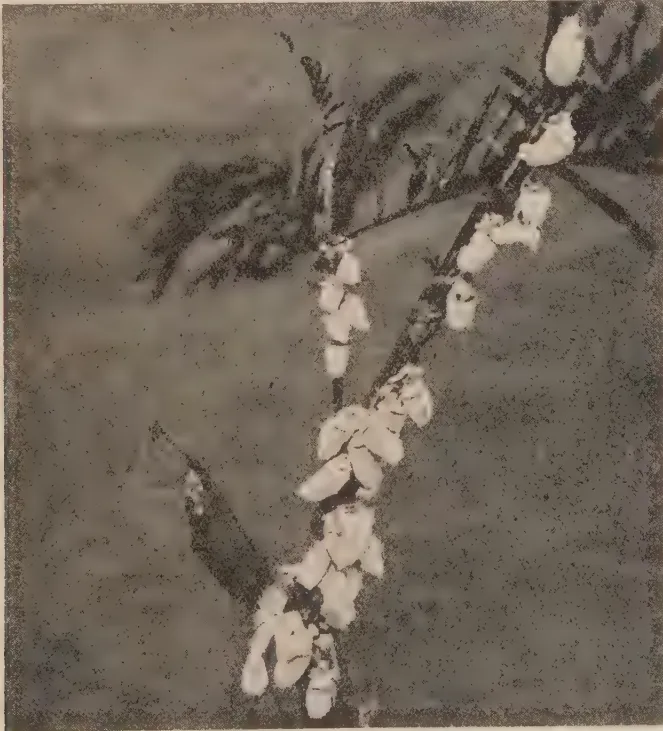
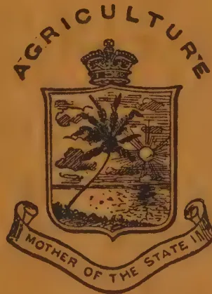
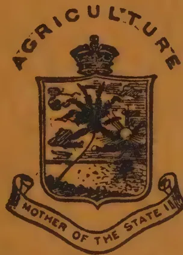
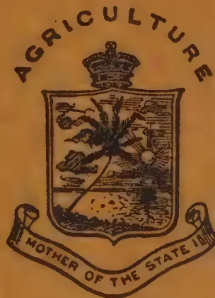
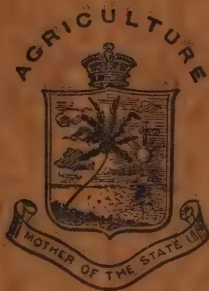
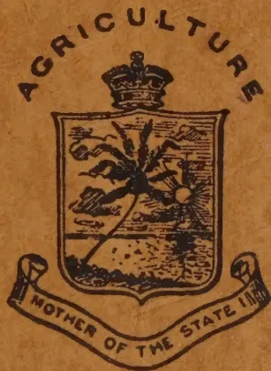
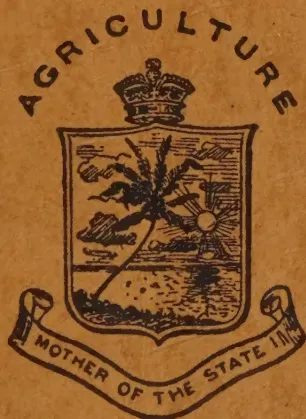

THE
TROPICAL AGRICULTURIST:
JOURNAL OF THE
CEYLON AGRICULTURAL SOCIETY.
VOL. XLVIII.
PERADENIYA, JUNE, 1917.
No. 6.
AGRICULTURAL EDUCATION.
Elsewhere in this issue will be found the report for 1916-7 of the School of Tropical Agriculture established at Peradeniya. This school which was established last year has been begun with the object of providing a training, practical and theoretical, in agriculture for young men who are desirous of working their family lands or of obtaining employment upon estates.
Its course is an elementary one and stress is laid upon practical work in the field. At the outset, the course was designed for one year but this was found to be too short to provide a satisfactory grounding in agricultural sciences and therefore it has now been extended to two years.
In the class-room, lectures and demonstrations are given, while in the field students are taught how to handle implements and animals, and the field operation in connection with tea, rubber, cacao, coconuts and other Ceylon products.
It is probable that the whole policy will require to be modified as experience is gained. The venture, for Ceylon, is an experiment, but if the results of efforts towards agricultural education in other countries are kept in view there should be reasonable hopes for success.
Agricultural education is the one subject connected with agriculture on which much has been written and little accomplished. There have been some successes but many failures.
Attempts have been made to teach agriculture in the elementary schools. This is now universally recognised as undesirable and fortunately is being generally abandoned. Agriculture is a combination in practice of many sciences and to be understood requires a sound general education and a wide knowledge of science. Rural education should therefore be general and agricultural education technical.
School Gardens are a necessary adjunct to any system of rural education for the purpose of providing material for training the powers of observation of the children and for arousing in them
338[JUNE, 1917.a love of nature and a desire for knowledge of the plants and animals which surround them. Agriculture, however, cannot be taught in School Gardens. This must be reserved for technical schools and colleges.
The United Kingdom has within recent years adopted this policy especially as it was felt that the agricultural colleges as originally designed were not entirely successful. Farm institutes under good staffs of agricultural teachers are now being established in every county for the practical training of agriculturists. From these it is intended to select the most promising students for training at college institutions established for associated groups of countries and centralized on definite Research Institutes investigating problems from a national point of view.
India has also reformed its policy of agricultural education recently. Demonstrations of improved methods in the field are adopted for the villager whose standard of education is rudimentary; short courses of two years, in which agriculture is taught in addition to general education being continued, established for the sons of headmen and small landowners. Collegiate courses are provided for training men for the Agricultural Departments and for the sons of wealthy landowners.
In the tropical colonies, various experiments have been made. Throughout the West Indian Colonies the sciences appertaining to agriculture are taught in all secondary schools. Some Agricultural Schools were established but these were generally abandoned in favour of practical training in experimental stations on the apprenticeship system, as the work of the schools was not of a sufficiently practical character for the class of boys that attended. In Jamaica, a Farm School has been established for some years and has been doing good work in the training of overseers for estates and of sons of small landowners. The School has extensive lands attached to it, and these are worked as an estate. The work of the students is essentially practical and has been well reported on. In Mauritius, there is a demand for highly trained agricultural and sugar chemists, and the Government of that Colony has undertaken the technical training of such students after they have passed the Senior Cambridge Examination, and provision has been made for the registration of all Agricultural Chemists in the Colony. The required standard is equivalent to that of many Agricultural Colleges in Europe.
With the experiences briefly alluded to above, it should be possible to frame out a policy of agricultural education suited to the conditions of this Colony. The type of training decided upon must greatly depend upon the future requirements of the students, but there is evidence that the type of agricultural education at present required is that of the Farm School or Farm Institute.
JUNE, 1917.]339The School was formally opened by the HON. SIR ANTON BERTRAM, on Saturday, January 15th, 1916, with 64 students in the English class and 6 students in the Vernacular. The school buildings consisted of two class-rooms and three hostels. During the year a third class-room has been built. The hostels accommodated 38 students; 15 others lived with parents or relations. Certain houses were registered in the neighbourhood for the residence of the remaining 17 students.
The Staff of the school consists of the Director of Agriculture as Principal; the Superintendent of Low-Country Products and School Gardens as Vice-Principal, a Registrar, and four teachers who hold Diplomas of the Poona Agricultural College. In December, 1916, MR. F. A. STOCKDALE succeeded MR. R. N. LYNE as Director of Agriculture relieving MR. T. PETCH who had acted since September. In the daily programme of work, the mornings were devoted to fieldwork and the afternoons to lecture-work in the class-rooms. The fieldwork consisted of the cultivation of a plot of land by each student and of demonstrations in Planting and Horticulture conducted by the Manager, Experiment Station, Peradeniya, and the Curator, Royal Botanic Gardens, respectively. Practical Chemistry was taken by kind permission in the Laboratory of Trinity College, Kandy. Members of the staff of the Department of Agriculture have given special lectures, MR. D. CLEMENT DE SILVA of New Peradeniya Estate has taken Estate Accounts and MR. J. E. P. RAJAPAKSE has co-operated in lectures on coconut cultivation.
The course for the vernacular students in Sinhalese was conducted by interpretation. All the teachers of the School had not then qualified in the Vernacular. The course terminated in August, 1916, all six students passing creditably. They were all of them Government Trained Teachers who have since been appointed to schools.
The English Course terminated in December, 1916. 56 students offered themselves for examination: 41 passed. For those who failed to qualify, a Short Course was arranged from January to March, 1917, at the conclusion of which 12 passed satisfactorily out of 16 who sat for examination. The majority of the trained students are assisting in the cultivation of family lands, some 8 have been employed by members of the Low-Country Products Association and I have recently received three further applications for recommendations.
In October, 1916, the School issued the first number of a magazine called THE PERADENIYAN which is intended to serve as a medium for all students past and present to state their opinions and observations on local agricultural problems. The objects of THE PERADENIYAN have been carefully defined by the Principal in the first issue.
340[JUNE, 1917.In the school was also formed a Debating Society which met weekly for the discussion of agricultural topics. The students were offered opportunities for playing cricket, and a tennis court has been prepared.
During the year two of the teachers have qualified in the Vernacular, one in Sinhalese and one in Tamil; and classes in the two vernaculars will now be conducted without the need for interpretation.
Experience during the first year's working has shown that the course was too crowded for satisfactory completion within one year, especially as the general education of some of the students left much to be desired. Arrangements have been made for the school course in the future to extend over two years and for terms to correspond more nearly with the agricultural seasons, and all students who have not reached a sufficiently high standard of general education in the schools will be called upon to pass an entrance examination.
Thanks are due to the generous donors of gold and silver medals for competition during the first course. These have helped to stimulate the students, and it is hoped that these students will endeavour to build up a reputation for the school.
It is satisfactory to note that there were 86 applications for admission to the second course now beginning. Of these, 32 students have been selected after the most careful enquiries as to the status of their general education, their physical fitness, etc. These students have been selected from all districts of the colony; and whereas many are the sons of wealthy agriculturists, others have been chosen from the ranks of those less fortunate in this world's possessions in order that all classes may have the opportunity of undergoing an agricultural training.
F. A. STOCKDALE,
Peradeniya, 10th May, 1917.
Principal.
Best All-round English-speaking Student: Gold Medal, presented by H. L. DE MEL, ESQ., M.M.C. Awarded to C. W. BIBILE.
Theory and Practice: First Prize, Gold Medal, presented by MUDALIYAR A. E. RAJAPAKSE. Awarded to H. C. PIERIS.
Second Prize, Silver Medal, presented by V. M. MUTTUKUMARU, ESQ., Maniagar, Jaffna. Awarded to T. KOTANI.
Theory: First Prize, Gold Medal, presented by H. L. DE MEL, ESQ., M.M.C. Awarded to E. K. KURIEN.
Second Prize, Silver Medal, presented by the Ceylon Agricultural Society. Awarded to M. S. MENDIS.
Practice (Demonstrations): First Prize, Gold Medal, presented by H. L. DE MEL, ESQ., M.M.C. Awarded to J. JACKSON.
Second Prize, Silver Medal, presented by the Ceylon Agricultural Society. Awarded to P. B. KAPUWATTE.
Field Work (Plots): First Prize, Gold Medal, presented by the HON. MR. A. J. R. DE SOYSA. Awarded to S. A. SILVA.
Second Prize, Silver Medal, presented by the Ceylon Agricultural Society. Awarded to J. H. LODEWYKE.
Best All-round Vernacular Students: First Prize, Gold Medal, presented by W. A. DE SILVA, ESQ., J.P. Awarded to D. J. PERERA.
Second Prizes, Silver Medal, presented by the Ceylon Agricultural Society: awarded to V. D. C. D. SILVA. Silver Medal, presented by the Ceylon Agricultural Society: awarded to H. M. D. B. SAMARAKOON.
JUNE, 1917.]341Class 1.—C. W. BIBILE, R. P. FERNANDO, J. JACKSON, T. KOTANI, E. K. KURIEN, M. S. MENDIS, H. C. PIERIS.
Class 2.—M. AMERASINGHE, C. ATTON, R. E. DE SILVA, A. E. DIAS, R. FERNANDO, P. A. GOONERATNE, P. B. KAPUWATTE, J. H. LODEWYKE, G. MADUGALLE, C. E. M. ORR, A. D. PARANAVITANE, A. S. PERIES, R. S. PELPOLA, A. K. PEREIRA, B. A. PEREIRA, G. D. PEREIRA, V. G. PERERA, H. S. DE S. PIYASUNDARA, R. V. SENANAYAKE, W. F. SENEVIRATNE, A. WIJEWANTA.
Pass.—A. DE S. ABEYGOONWARDENE, E. N. ABEYAWARDENE, E. W. ATUKORALA, R. A. CAMERON, A. V. CHELVANAYAGAM, C. DE SYLVA, G. G. D. D. DE SILVA, K. T. E. DE SILVA, P. W. C. DE SILVA, S. H. F. DE SILVA, C. DE S. GOONESINGHE, A. E. W. GOONWARDENE, A. C. W. JAYAWARDENE, A. C. PALAVINAYAGAM, W. H. PEIRIS, W. D. C. PEREIRA, L. E. RAJA RETNAM, D. S. RANASINGHE, A. SEEMAMPILLAI, R. SALGADO, D. S. SENANAYAKE, S. A. SILVA, N. THAMBIAH, B. E. VAN REYK, R. S. WICKREMESURIYA.
Vernacular Class.—K. B. EKENAYAKE, D. J. PERERA, K. A. J. PERERA, K. M. PIYADASA, H. M. D. B. SAMARAKOON, V. D. C. D. SILVA.
The first prize-giving of the School of Tropical Agriculture was held on Saturday at Irene House, one of the hostels attached to the school. The HON. MR. C. S. VAUGHAN, G. A., Central Province, presided, and MRS. VAUGHAN distributed the medals and certificates. There was a fairly good attendance.
After the Report of the Principal had been read, and the prizes and certificates distributed, the Chairman asked MR. E. B. DENHAM, Director of Education, to address the gathering. He said that MR. DENHAM had taken considerable trouble to come there from the wilds of Bintenne.
MR. DENHAM, who was received with cheers, said he was very glad to come there and be present at the first prize-giving of the School of Tropical Agriculture. They had read a great deal about this school and they had heard a great deal about the Agricultural School staff, one of whom was MR. DRIEBERG who was a great authority on Agricultural Colleges, and he would tell them all about it at a lecture at the school—of the growth of Agricultural Colleges and of Agricultural education in Ceylon (applause). So he would not take up their time with that subject. He would say on behalf of other branches of education, on behalf of all branches of the Government Service and on behalf of all communities, that they all welcomed the presence of the Agricultural School at Peradeniya. He did not think there was any experiment which had been looked forward to with more interest by the people of this country than the attempt which was being made of Agricultural education there. He did not think many of them realised how very great the interest was in the villages among the village population of Ceylon on the
342[JUNE, 1917.matter of agriculture of this country. There was a real live interest in agriculture among them and there was a real desire that boys should learn something of agriculture, of the bushes, of the plants and of the animals. There was no good Sinhalese, no good Tamil, no good resident of Ceylon who did not realise that this country owed its great prosperity to its agriculture. Ceylon was primarily and essentially an agricultural country, and no branch of education which did not include that important factor and which did not realise that they were dealing here with an agricultural population could really touch the people of this country. They had a start made here which had been a short start, perhaps too short a start which had been a year's course, but he was glad to hear that the course in future would be for two years, and which would afford them a greater chance to come to Peradeniya and learn something which would be useful to them hereafter. He was sure that MR. STOCKDALE would not mind if he made a few criticisms with regard to the Agricultural School. Of course, he ought to say that it was a really good School, the finest Agricultural School in the world, situated in the most picturesque surroundings and amongst the most intelligent, most enlightened and the most genuine seekers after agriculture that might be found in the whole Island. But that he would keep for his peroration. Now if he might he should like to deal with that subject in the spirit of a friend, a candid friend. He hoped that that School would not only be content in training its students in the "ologies" but in turning out trained agricultural students with a knowledge of those branches of agriculture with which they might have to deal in the future. What they wanted was that men of that School should go out of it with a greater knowledge of their own country, of their trees and the animals. They should know them well and take interest in them. What they wanted was that there should be practical work, and practical work, MR. STOCKDALE would tell them, was a prominent branch of that school. They wanted as much as possible of it. He would like to say that some of those students who went out of that school should visit the schools and the school gardens in the neighbourhood and show and teach the school-teachers what they had learnt at Peradeniya and explain it to them in their own language. It was not good that this school should be one in which only English was taught and where only English books were learnt, and the students should be able to give to their own people an exposition of what they had learnt in the vernaculars as well as in the English language. Addressing the students for the second course which had just opened MR. DENHAM said that they had very important work to do. They had not only the work which they had come there to do as pioneers, but they had the work which they had to do when they went out of that place as pioneers in the great movement of agricultural improvement of the Island. They ought to know the names of plants in Sinhalese without which they would not be able to explain to the people what they had learnt and take to the field that which would suit the agricultural community. He was not saying that because the fact was forgotten at Peradeniya, but only as a reminder. Now they had a two years' course instead of one year, and they would have more time for their studies, and he hoped that during their work at
JUNE, 1917.]343Peradeniya they would not only find "books in brooks and sermons in stones" but find "good in everything." The work which they did in the fields and the work which they did in the class-rooms would enable them to appreciate the wonders that surrounded them, and he hoped that the influence of that School might be an influence for good and that it might take a place among the other Schools of Kandy, Schools which stood high in that Island—stood high for the good work that had been done by them. The Agricultural School of Peradeniya should take a place with those Schools in Kandy, like Trinity, Dharmaraja, St. Anthony's and Kingswood, and they should have a school spirit as well. To-day they mourned the loss of one whose name had been well-known in Kandy, and whose name was associated with Trinity. Many of them might have heard the sad news of MR. CAMPBELL's death at the front. He associated himself with all work at Kandy, with the work of all branches, and with work in all its branches, and he felt sure that that spirit which they all found in him and which was reflected in his school, which was reflected not only at Trinity but was reflected in all other schools in Kandy would be found among them all at Peradeniya. (Loud applause.)
The Chairman said the next speaker should have been MR. GRAEME SINCLAIR, Chairman of the Planters' Association, who had been prevented from coming and MR. H. L. DE MEL, the ex-Chairman of the L.C.P.A., who hoped to be there and had actually come to Kandy for that purpose but was unfortunately laid up in bed. In his place MR. MOONEMALLE had kindly consented to address them and he called upon him to do so.
MR. MOONEMALLE said that he was only a substitute and was absolutely unprepared to make a speech. He would say with all sincerity that he was very happy to be there for the prize-giving of the School of Tropical Agriculture at the opening of which he was present last year. He was looking forward with great anticipation to the work that had been done in the first year, and from the report that was presented to them by the Director he felt that a great advance had been made in the progress of agriculture in this country. For some considerable time he himself had been engaged in the development of the land, and one thing of which he had been impressed by that work had been his great lack of specialised knowledge. He had been forced to make experiments which had been expensive. But the students of that College, when they went into their work after they had completed their course, started with having to pay nothing for their experiment. They went into their work, he wished to impress upon them, as centres of influence in order to impress on a conservative community the knowledge that they possessed. It was an accepted theory that with the older people in the villages they could do absolutely nothing with agricultural education. But he thought if in their own centres men with specialised information would conduct experiments which could be seen he felt sure that when they found the results of those experiments they would start new methods of cultivation. Just now in this country there was great
344[JUNE, 1917.patriotism. He thought that the most patriotic thing a member of the community in Ceylon could do was to do this pioneer work amongst his own people. That was the most patriotic thing that a Sinhalese could do in his own centre. He was very glad to be present at that function and to lend what encouragement he could to the new Director of Agriculture. He had come fresh from another Colony where he believed the conditions were very similar. He had come with experience in his own line and, he was sure, that he was going to do a great deal for the people of Ceylon (applause). He was also glad that the Director of Education was there, because he must always have an interest in the work that was being done at Peradeniya. He was sorry that he had to address that afternoon because if MR. DE MEL had been there he would have been able to tell them exactly how the Low-country P.A. regarded the work conducted at that School.
The Chairman said that he had been to Irene Hostel several times and even a month ago but he was not aware that a Tennis Court had been opened there. It was a thoughtful act on the part of the Principal to provide a Tennis Court for the students, because they all knew what benefits the students could derive from it. They all knew the old motto Mens sana in corpore sano and nothing could be so good to the mind out here in the tropics as to have a game of tennis at times. He was now getting on in years, yet he had kept up his tennis and he had found it gave the maximum exercise in the minimum of time. He had great pleasure in asking MRS. STOCKDALE to open the court.
MR. C. DRIEBERG, Superintendent of Low-Country Products and School Gardens, moved a vote of thanks to the chair. He said his duty was a brief and pleasant one. All those who were resident in Kandy knew how much MR. and MRS. VAUGHAN associated themselves with public functions in the Hill Capital, not only with every public function, but with every movement and every enterprise for the welfare of the public. MR. VAUGHAN had also been a member of the Committee of Agricultural Experiments, and as such had been in touch with the work of the Department. This school might be described as an agricultural experiment and from what they had heard it was an experiment which was going to be a success. He had great pleasure in proposing a hearty vote of thanks to MR. VAUGHAN for presiding and to MRS. VAUGHAN for distributing the prizes (cheers).
The Chairman on behalf of MRS. VAUGHAN and himself heartily thanked them for the kind welcome they were given and the very kind words spoken of them. He was very much indebted to MR. STOCKDALE for asking him to take the chair on that occasion. He was present at the opening of the School of Tropical Agriculture some 16 months ago. They could safely say now that the school had been established on a firm basis and the results were certainly gratifying.
JUNE, 1917.]345A school-garden may be roughly defined as any place near, or attached to, a school in which the pupils are taught to grow and care for plants. It may be only a few yards in extent or it may cover quarter of an acre or more. Its size is less important than the nature of the work done. In it the pupils learn how to grow plants, to take an active interest in their surroundings, and to become more familiar with what is going on in the plant world. It will easily be seen that the school-garden is practically useful in any rural district, but its true educational value must not be underestimated nor overlooked. The pupils are taught not merely how to work land. They are taught to observe and to think, to use their hands, eyes, and minds in conjunction. Concrete facts are presented, and the pupils are taught to think in realities and not in symbols. Real objects and visible changes are considered in the school-garden where the plants are seen and the processes of growth observed from week to week.
About the year 1695 a German monk discerned the educational value of a garden attached to his orphanage, but it was many years later before ideas as to the utility of gardening in this connection for children received much consideration. However, about the beginning of the nineteenth century gardens and small farms were set apart for the instruction of the younger workmen and sons of labourers on several large estates. Out of this practice grew many farm and agricultural schools in which courses of study were given to the children of farmers and labourers. Gradually a belief arose that something should be done for the children of rural schools in the way of definite instruction with a bias towards matters pertaining to rural life. The reasons were not educational but economic, and were intended to encourage the young to take an interest in their surroundings and to check the emigration from the country to the city.
About 1820 several German States introduced the culture of fruits and vegetables into rural schools. In the year 1869 it was required in Austria and Sweden that, wherever practicable, gardens should be attached to rural schools. During later years France, Russia, Switzerland, England, Scotland, America, and Canada followed the lead in recognising school-gardening in the curriculum of their elementary schools. In the case of Belgium courses in horticulture were made compulsory in her elementary schools.
For many years past a certain amount of instruction has been given in various schools throughout Ireland, and in Co. Limerick an endowment scheme existed, and still exists, by means of which grants are given to enable teachers to provide tools and appliances for garden work. Each year the school-gardens in the county are inspected and prizes awarded for the best kept gardens. The work done in some schools was, however, of a somewhat desultory nature and of comparatively little educational value to the pupils who did not receive a sufficient amount of practice in the various cultural operations.
346[JUNE, 1917.About the year 1909 the present scheme of Rural Science, including school-gardening, was introduced, and a fair amount of progress has been made with it. Its aims are to awaken in the children an intelligent and living interest in the district immediately surrounding their homes and to teach them to understand the principles of plant growth and their application to agriculture and horticulture. The child begins by studying the life of a plant, its various functional activities, its relations to soil, water, air, light and other factors that help or hinder it in its growth towards maturity. This is accomplished by direct observation and actual experiment on the part of the pupil who then, in the garden, applies the knowledge acquired to the practice of simple observations such as seed-sowing, planting, watering, etc. In addition practice is obtained in the care and use of tools and in the preparation and working of soil for plants.
Later the pupils become acquainted with the physical features of the district and the distribution of human activities depending on such features, and, having acquired a knowledge of the life-history of the plant, they proceed to study its environment and become more familiar with external factors, such as weather, soil, etc., which influence the growth of plants.
The following figures show the progress made in school-gardening in England and Scotland, where the scheme is worked on somewhat different lines to those adopted in Ireland. In Great Britain more attention is paid to the actual raising of crops than to the utility of the subject as an instrument of educational value in rural schools.
| England. | Scotland. | |||
|---|---|---|---|---|
| Schools. | Pupils. | Schools. | Pupils. | |
| 1909-10 | 1,816 | 33,195 | 50 | 940 |
| 1910-11 | 2,176 | 39,531 | 140 | 2,578 |
| 1911-12 | 2,516 | 45,479 | 250 | 4,401 |
| 1912-13 | 2,780 | 50,917 | 380 | 6,500 |
| 1913-14 | 3,011 | 56,037 | 497 | 9,127 |
It will be seen that school-gardening has made rapid progress in these two countries. In England in 1902 there were 387 school-gardens where instruction was given to 4,357 pupils. In 1915 there were over 3,100 school-gardens in operation out of a total of 19,000 public elementary schools.
In Wales for the year 1913-14 there were 213 school-gardens, in which 3,719 pupils received instruction.
In 1912 there were 70 school-gardens in Ireland in which about 1,200 pupils received instruction. The number of school-gardens in operation has now increased to 126 in the present year, and the total number of pupils receiving instruction is about 2,600.
School-gardening may be made the basis of a national system of agricultural and horticultural education; and in this country, where very many of the children receive their only education at a National School, it should be made an integral part of the curriculum in rural schools.—R. N. SHERIDAN IN JOUR. OF DEPT. OF AGRIC. AND TECHNICAL INSTRUCTION FOR IRELAND, VOL. XVII. NO. 2, JANUARY 1917.
JUNE, 1917.]347(Extracts from Quarterly Reports of Research Officers.)
Lectures on Hevea diseases were given to the Badulla and Passara Planters' Association.
The water hyacinth reappeared in the Kandy district, and was dealt with by the Municipality. It has since been found in the Rambukkana and Eadella districts. The Government Agents of the Sabaragamuwa and North-Western Provinces have been notified of the latter occurrences, and a letter has been sent to the Government Agent of every Province in which the plant has been found, asking him to instruct the headmen to look for it during the current flowering season.
A circular was written on the Hypochnus disease of Tea and the mss. of a number of the Annals was sent to the press. The latter includes a paper on Cycas by Father Le Goc, and a list of new fungi, chiefly parasitic, accumulated during the last seven years.
The routine work occupies all available time at present, and practically no research is possible. Investigations were begun into the relation of Hexagonia to the dieback of Hevea branches, and the formation of open wounds on exposed Hevea roots. New facts were discovered regarding Thread Blight, Tea Branch Canker, Brown root disease, which may lead to the final settlement of these questions when it is possible to work at them.
T. PETCH.
24th April, 1917.
Tortrix of Tea.—Egg parasites have been studied and bred with considerable success in the Laboratory. The work is being continued by the Assistant Entomologist, in the Maskeliya district, where more natural conditions prevail.
Acacia scale.—The fluted scale, Ichneumon purchasi, has received special attention. Reports of its occurrence have been received from Upper Hewaheta, Galaha, Peradeniya, and a complete survey of its distribution in the Ambawela, Welimade and Nuwara Eliya districts has been made. Predatory Coccinellids and the fungus Cephalosporium all tend to check the insect, which, however, is becoming more widely distributed than its enemies.
E. R. SPEYER.
1. Experiments.—A large experiment on the Moragalle Estate, Galaha, was started in January, with the object of carrying out the scheme of pruning infected bushes in order to anticipate severe attack. A field of 24 acres was completed, but the experiment cannot be said to have been successful from the economic point of view. Owing to labour difficulties the work took too long, and the experiment started too late, but the results prove that the prescribed periods when extra prunings should take place are entirely correct. The results of the Poonagalle Experiment are complete, and show a very favourable result, the insect having been kept in complete check for a period
348[JUNE, 1917.of 18 months, but the scheme is unpracticable until the Borer has been reduced by other and less complicated methods.
The practice of cutting off die-backs after pruning at stated periods have proved effective, and the Planters' Association has been informed of this with a recommendation that it is important to burn the woody portion of prunings immediately after pruning.
Experiments with washes have been continued, and a partially satisfactory paint consisting of fish-oil and resin has been obtained; investigations in this line are important and will be completed during the next pruning season.
2. General Observations.—Shot-hole Borer has, for the first time, been found in the dead-wood of the Ceylon Almond, Terminalia. This discovery is of note, as it is the first indication of the possibility of using a successful trap.
Several species of Shot-hole Borer and other Scolytid have been found and received from dead rubber trees, from Grevillea, Albizzia and Tephrosia.
E. R. SPEYER.
During the month of January I was engaged principally in completing the parallel series of samples made from young and old trees on Gikiyanakande Estate.
These two series consisted of samples of sheet and crepe rubber made from the latex of trees ten and twenty-two years old respectively. With each batch it was necessary to determine the percentage of total solids and of rubber in the latex, and also the nitrogen-content. The percentage of total solids and of nitrogen in the latex serum left after coagulation had also to be determined.
The analyses were performed principally in the laboratory of the Government Analyst, Colombo.
The preparation of this series of samples was commenced in November, 1916, and was completed in January, 1917. The analyses were however not completed until some time after the last rubber sample was prepared.
Samples of rubber were also made of latex containing various amounts of Formalin.
In February samples of rubber were prepared by coagulating the latex with the minimum, four times the minimum and eight times the minimum amounts of acetic, formic, sulphuric and hydrofluoric acids. This series was an extension of Series 1, Sub-section 2, prepared in 1913.
Experiments were also carried out on the effect of adding alkalies to latex, thus presumably partially "denaturing" the protein contained therein.
Samples of crepe rubber were prepared from bulk coagulum rolled out at various periods after coagulation.
In March work on the effect of adding alkalies to latex was continued. Where an excess of sodium or potassium hydrate is added to latex and the latter is allowed to stand for some days, the latex loses its property of forming a cohesive coagulum on being rendered acid.
Grainy non-cohesive flakes of rubber are formed which cannot be separated from the liquid in the usual way but have to be filtered off through fine-mesh cloth. The separated flakes may then be squeezed together into a lump and creped. The vulcanization test results of these samples should prove interesting.
Samples of rubber by evaporating latex to dryness in a vacuum drier were prepared.
Three sets of samples have been forwarded to London, the total nett weight of rubber being 369 lb. and the number of samples 32.
L. E. CAMPBELL.
JUNE, 1917.]349Proceedings of a Meeting of the Committee of Agricultural Experiments held on May 10th, 1917 :—
Present :—The Director of Agriculture (Chairman); the Botanist and Mycologist; the Rubber Research Chemist; the Superintendent, Low-country Products and School Gardens; the Superintendent, Botanic Gardens; the Acting Government Chemist; the Hon. the Government Agent, Central Province; the Hon. the Rural Member of the Legislative Council; the Chairman, Planters' Association of Ceylon, MUDALIYAR A. E. DE S. RAJAPAKSE, MESSRS. C. E. G. PANDITTESEKERA, A. W. BEVEN, J. B. COLES, T. Y. WRIGHT, J. S. PATERSON, N. G. CAMPBELL, R. G. COOMBE, G. H. MASEFIELD, E. W. KEITH, H. D. GARRICK, W. SINCLAIR, A. J. AUSTIN DICKSON, G. H. GOLLEDGE and H. A. DEUTROM (Acting Secretary); and as Visitors MESSRS. P. SPENCER SCHRADER, R. H. VILLIERS, P. A. KEILLER, H. A. BEACHCROFT, E. C. VILLIERS, H. A. McMULLIN, P. R. SHAND, E. M. WINDUS and ALEX. PERERA.
With regard to the statement in the minutes of the previous meeting that Bark-rot had not been reported from the Federated Malay States, the Mycologist stated that he understood that both Bark-rot and canker had been recently reported by officers of the Rubber Growers' Association, but he was aware of no statement regarding these diseases by the Department of Agriculture.
The minutes were then confirmed.
2. Progress Reports.—Referring to the Progress Reports circulated to all members, the CHAIRMAN explained that the Tephrosia candida in the rubber continued to die out, due probably to the plants having run their course and having become infected by Poria. He announced that the manures for tea and cacao experiments ordered had arrived, and would be applied with the advent of the rains. An acre had been planted at the Peradeniya Experiment Station in January with Natal-Java Indigo, and most of the plants were now in seed—much earlier than was expected. Seed for which there appears to be a demand, would be available for distribution in about six weeks or two months.
On an enquiry made with regard to Java coconuts, the Chairman stated that the nuts were not available for sale at present, it being decided that they should first be planted at Peradeniya. The records of yields, etc., of the two trees on the Station were being kept.
At the Dry Zone Station citrus grow well under irrigation and the CHAIRMAN proposed establishing plots of these and also of Mauritius fibre on that station. Manila hemp was grown at Anuradhapura and Peradeniya, the plot at the latter station being about half an acre in extent.
3. Cacao Manuring Experiments.—With regard to the statement for 1916-17 which was tabled, the CHAIRMAN explained that it was unwise to attempt to draw any conclusions from the results of one year's manuring especially in old cacao, which as instanced by the results of certain plots, is of very irregular stand. The normal yields of cacao plots should always be taken
350[JUNE, 1917.into consideration when working out details of manurial experiments most especially in old mixed plots, and it is interesting to note that plot 29C (formerly 100) still retains the first place.
The CHAIRMAN also submitted a detailed statement giving the yields of the different plots for the inspection of members.
4. Coconuts at Puttalam.—MUDALIYAR RAJAPAKSE read his report on the Rajapakse Kumarawanniyaya, and the CHAIRMAN called for comments on the paper, which was a very interesting one. A discussion took place as to the distance most advantageous for coconuts and it was stated that planting 27 ft. 27 ft. diagonally, which gave 70 trees to the acre, was considered to be the best for this district.
The CHAIRMAN stated that in other Colonies he had visited planting was usually done diagonally, and not on the square system as in Ceylon.
MUDALIYAR RAJAPAKSE invited suggestions for any further experiments to be carried out on his plantation. It was decided to try clean-weeding on one plot. The Committee agreed that the Chairman draw up a scheme of experiments in consultation with MUDALIYAR RAJAPAKSE, to be submitted at the next meeting.
5. MR. BEVEN showed a mass of coconut roots found at the bottom of a coconut plant about seven years old when being transplanted. Usually the roots of a nut when growing are found outside it. In this instance the mass of roots was inside the nut.
6. The CHAIRMAN drew the attention of the members to Leaflet No. 3 and Bulletin No. 31 which were tabled. The fluted scale referred to in Leaflet No. 3 was exhibited by MR. SPEYER at the last meeting. This insect was found mainly on Acacia and on Citrus trees.
Two tabled statements re rubber tapping and manuring experiments were also laid on the table.
7. The members then made a complete tour of inspection of the various experimental plots on the station.
H. A. DEUTROM,
Acting Secretary, Committee of
Agricultural Experiments.
The yield for the months of March and April has been 10,898 lb. Green leaf from 11 acres, being an excess of 4,923 lb. over the two previous months. The February made tea fetched in Colombo 52 cents per lb. for Broken Orange Pekoe and an average of 45 cents for all grades; the March made tea fetched .56 cents per lb. for Broken Orange Pekoe and an average of 49 cents for all grades.
The Cora grass in plots 144 and 145 are still bad in spite of digging out and burning the bulbs once a fortnight. Patches of this troublesome weed have made their appearance in Plot 146.
JUNE, 1917.]351The general yield continues to be satisfactory.
All the drains through the tea have been thoroughly cleaned out.
A plot of jungle land, two acres in extent, next to the Manipuri plots, is being cleared for extending experiments with tea.
Tephrosia candida on all the plots has been cut and mulched once since the last meeting, this operation being the twentieth since planting in 1913.
All dead branches have been removed from the rubber trees, the wounds being tarred.
Trees affected with canker and bark rot have had the newly-tapped surface painted with Brunolinum. The work of putting up short contour walls which will help to build up broad low walls to prevent wash is in progress in the Hill-side plantation.
Two acres behind the plantain plot have been cleared of wild timber and coconut trees, and the gravel pit has been filled up. The land is being ploughed and got ready for planting rubber during the next planting season, the best distance to be determined after inspection by the Committee.
One round of picking has taken place since the last meeting yielding a small quantity. The autumn crop is nearly finished and the spring crop will be a light one.
The old dadaps in all the cacao plots have had their tops lopped off to reduce again their height and density.
The dadaps in plots 63—67 have been lightly pruned and the green leaf mulched in the cacao.
Light pruning and removal of suckers have been continually in progress.
Plots 68—76A planted with various kinds of cacao have been weeded and the Tephrosia candida and Leucaena glauca cut and mulched to the young trees.
The artificial manures ordered for manuring the cacao experimental plots according to the scheme laid down last year have arrived, and have been stored ready for application with the first rains. The paths between the different cacao plots have been swept and kept clear of weeds.
The old stumps left in the cacao plots have all been uprooted and removed.
Samples of five grades of cacao were submitted to MESSRS. KEELL & WALDOCK for quotations. As the highest offer was only Rs. 34/- it has been decided to store the cacao until the market improves.
The ten-acre plantation has been thoroughly weeded and disc-harrowed and all drains have been cleared and cleaned, the cheddy being mulched round all young supplies after forking.
Two young palms appear to be dying out probably due to bud-rot or root disease. The attention of the Mycologist has been drawn to the matter.
352[JUNE, 1917.Four coconuts each of the three different varieties were husked and broken to determine the weight of copra, etc., of each variety. The following are the results obtained:—
| Variety | ... | ... | Maldivé | Java | Ordinary |
|---|---|---|---|---|---|
| No. of nuts | ... | .. | 4 | 4 | 4 |
| Weight of husks... | ... | .. | 6 7/8 lb. | 7½ lb. | 8 1/8 lb. |
| Weight of nuts after husking | 5¼ ,, | 13 ,, | 5¾ ,, | ||
| Weight of water | ... | .. | 1½ ,, | 5¼ ,, | 1 ,, |
| Weight of nuts after breaking | 3¾ ,, | 8¼ ,, | 4¾ ,, | ||
| Thickness of kernel | ... | .. | 7/16 in. | 7/16 in. | ½ in. |
| Weight of shell ... | ... | .. | 1 lb. | 2½ lb. | 1 5/8 lb. |
| Period of drying... | ... | .. | 6 days | 6 days | 6 days |
| Estimated No. of nuts to the candy of copra |
.. | .. | 2,240 | 896 | 1,378 |
All nuts of the Java variety will be planted in nurseries with the object of increasing the plantation of the promising variety.
All the plots have had the shade—dadaps and Leucaena glauca—lopped and the leaves mulched round the plants.
A few plants of Quillou coffee were attacked by two leaf diseases, Hemeleia vastatrix and Glæosporium coffeanum, but they did no apparent damage. The plants were sprayed with Bordeaux mixture.
Orders for Robusta and Hybrid seed continue to come in.
One acre below the road has been ploughed and carefully levelled and sown broadcast in Hineti paddy, at one bushel per acre, for the yala crop. Special attention will be paid to the collection of seed paddy for future use by selecting the heads of the best plants only, before the general harvesting.
It is proposed to extend the paddy field by taking in the adjoining cacao plots on the flat. The work will be put in hand as soon as labour is available.
All drains and irrigation channels have been thoroughly cleaned and the uncultivated portions ploughed and left fallow.
The vines flowered freely in March and April and were hand-fertilized, the cost of fertilizing 1,000 flowers being 20 cents. The fertilized flowers have set very well and the pods look very healthy. 20 lb. of last year's crop were sold in Colombo for Re. 1.75 per lb. unselected.
The Plumeria and dadap plants on which the vanilla vines are trained were lopped as they were growing too thick and shady.
Plot No. 18, Indigofera arrecta (Natal-Java) planted on the 19th of January this year flowered on the 10th of April, much earlier than was expected. A fair quantity of seed will probably be ready for distribution by the end of May.
A quarter-acre of Manila hemp (Musa textilis) has been planted 10 ft. by 10 ft. behind the Vanilla plot, plants being of various sizes.
Further experiments on tapping for papain will be carried out shortly.
In the fruit plots tomatos have done remarkably well in the dry season. Sown in the middle of October, they fruited at the end of February; there
JUNE, 1917.]353was a large supply of fruits each weighing over a lb. No plants were attacked by the withering disease (Bacillus solanacearum) but a fruit fly made its appearance and caused a few fruits to rot.
All the castor plants growing on the station have been uprooted and burnt.
The following new varieties of green manures were sown in the Show Plots opposite the office:—
Crotalaria sericia; Crotalaria varrucosa; Indigofera dosua.
36 visitors have been shown round the station since the last report.
The labour outturn has been satisfactory and the health of the coolies is good.
| March | ... | 6.49 inches | .. | rainy days, 17 |
| April | .. | 2.15 " | ... | do 6 |
The Director of Agriculture inspected the station in April and the Acting Manager has made two visits since the last report.
The following additional crops have been planted;—Red onions, potatoes, chillies, cummins and bitter rice: the seed being obtained from the local markets. Careful records are being kept regarding the growth, cultivation, treatment, etc. A few chillie plants were noticed to be affected by some disease. One specimen was sent to the Mycologist who reports as follows:—
"There are two diseases on the specimens forwarded with Memo No. 224 of April, 1916.
"(a) Fruit disease, caused by Vermicularia Capsici: this might be prevented by spraying with Bordeaux mixture.
"(b) Root disease, producing a general wilt of the plants, caused by Sclerotum sp. This usually occurs only in very wet weather, and would appear to indicate that the plants were grown in too moist a situation. Uproot wilted plants, and fork in lime over the affected soil."
All legumes have been part harvested, pulled up and dug in. Plots have been resown with other legumes under irrigation.
The channels, drains and numerous paths have been cleaned and improved.
The plot set apart for paddy cultivation has been roughly marked out and cleared of cheddy growth; the lower portion is being freed from stumps and ploughed.
A road leading from the main road to Jaffna and another cross road are under construction. At present there is no proper system on the station.
The plots have all been thoroughly mulched and kept clean.
The block of land separated from the main clearing by the arboretum which was sown with Sudan Dura in 1914 is being prepared for growing fibre.
The three-acre plot of coconuts on unirrigable land has been gladly forked round and mulched. The plants are all doing well.
354[JUNE, 1917.The Dura, Maize and Kurakkan crops have been harvested and yielded as follows:—
| Maize | ... | bushels per acre | |
| Dura | ... | " " | |
| Kurakkan | ... | 7 | " " |
36 visitors have been shown round the station since my last report.
The first crop for the year 1917 was picked in March and April. The number of nuts was 1,114 from an area of acres composed of plot A, 17 acres of year old palms, and plot B, acres of years old palms (number of trees per acre 70).
Plots A B C and E have been kept ploughed and disc-harrowed and the trees clean weeded round the base.
Irrigation channels have been cleaned and ridges repaired.
Mimosa weed is being uprooted and burnt.
The fence is being patched up in the worst places. To put the whole length into order will require a larger sum than can at present be spared.
The labour force has been further reduced and work cut down to a minimum.
MR. W. G. PERERA, Assistant Foreman, Experiment Station, Peradeniya, took charge of the Mahailuppalama Station on the 19th of March, 1917, relieving MR. P. G. SAMINATHAN.
H. A. DEUTROM,
Acting Manager, Experiment Stations.
(Extract from Progress Report for March and April.)
Solanum Commersonii.—Sixteen lb. of tubers were planted in a 616 sq. ft. plot on 19th April. MR. E. H. MELLOR informs me that this potato did very well at Westward Ho. this season and was not affected by the rain. English potatoes he tried at the same time were practically a failure.
Sweet Potato (Cluster var.).—The last crop harvested on 24th April. yielded at the rate of cwt. per acre. Rats did a certain amount of damage in this plot.
Arracacia esculenta (Peruvian Parsnip).—This seems to do very well at Hakgala and is an excellent vegetable, although it takes from 10 to 12 months to reach maturity. Suckers of this have been sent to the Secretary, Ceylon Agricultural Society for transmission to Australia.
Diospyros Kaki (Chinese Date Plum or Persimmon).—Four plants of this were received from the Secretary, Ceylon Agricultural Society, on 24th March, and have been potted up for the time being.
J. J. NOCK.
JUNE, 1917.]355(Department of Agriculture, Ceylon.—Leaflet No. 3.)
The Fluted Scale is one of the largest scale insects, and also the most conspicuous. It belongs to that class of insects in which the mouth parts are fused and prolonged into a sucking beak (hence they are known as plant lice), and, consequent to their sedentary habit of extracting the juices of plants, they are, in their full-grown stages, short-legged, slow moving, and their bodies are sack-like, modifications which are more applicable to true parasites of animals than to external feeders on plant tissues (and may well

A black and white photograph showing a plant stem heavily infested with Fluted Scale insects. The insects appear as small, white, sack-like structures clustered along the stem. The background is dark and out of focus.be termed a degeneration, especially in forms which have lost altogether the sense organs and legs). Their methods of reproduction have, similarly, become changed from the normal, the eggs laid being covered either by the actual skin of the female, or by the secretion of a waxy substance by special glands in the body of the female. The male sex is very different: an active insect with one pair of wings, but of much smaller size than the female, and sometimes only a few males are developed from the enormous number of eggs laid, while at others no males exist at all.
356[JUNE, 1917.The egg on hatching emits a small very active larva, provided with the same type of sucking mouth as the adult, and after creeping long distances over the branches and leaves of its host settles down to suck, and increases in bulk until a moult of the skin is necessitated. The number of these moults is usually few, and in the female culminates without much change in the mature insect; whereas in the male the one but last moult discloses a definite pupal stage, which turns to the mature winged male, just as a chrysalis changes to a butterfly.
The adult female of Icerya purchasi is of a dark brown or reddish colour, measuring 5 millimetres ( inch) in length, and a little less in breadth, and is flat-oval in shape. Clinging to the stem of the plant, the hind extremity of the body is tilted upwards, and a dense white cottony substance is secreted from this portion of it, which grows out into a regular moulded cylinder, sometimes nearly half an inch in length, with parallel longitudinal ridges, hence the name "fluted." The cottony substance is of a brilliant white colour, and in its close meshes the eggs are deposited, and the whole bears a remarkable resemblance to the silken cocoons of certain spiders.
On drawing out the cottony mass, bright red eggs to the number of 400—1,000 are readily seen, each measuring about millimetre.
The females congregate in groups, often in huge numbers, on their food-plant, and are then conspicuous and very beautiful objects, as is readily seen from the illustration.
The legs are short and simply developed, and are quite invisible, unless the insect is turned on its back and the surplus cotton removed.
The long sucking proboscis is situated between the forelegs; it is exceedingly fine and longer than the whole length of the insect, thus penetrating a great distance into the plant tissues.
In addition to the cotton secretion, the back is surmounted with numerous short hairs and little tufts of white cotton, giving the impression of a thin white powder. The secretion exudes from definitely arranged glands, which form a transverse ring across the posterior end of the body, occasioning the definite shape of the cotton.
The sense organs are the eyes and antennæ-minute, the former situated on the underside of the head, and the latter divided into some nine segments, placed just in front of the eyes.
The male is rare as will be appreciated from the fact that two only have been found amongst some thousands of specimens recently examined. No one without a special knowledge of Entomology would believe that they were confronted by the opposite sexes of the same insect were they to see the male and female Icerya side by side, any more than they would recognize the mature female as an insect at all.
The male, however, bears every resemblance to an insect, is barely the length of the female, slender, of a deep red colour, and is provided with a broad dark-coloured pair of wings longer than the body. The legs are really not much longer than those of the female, but in proportion to the breadth they are relatively of very much greater length. The antennæ are very conspicuous, almost as long as the whole body, and divided into ten segments, with profuse rings of hairs, much like the antennæ of a mosquito.
JUNE, 1917.]357The body, too, is divided into definite and visible segments, and sparsely powdered with white cottony secretion. The mouth parts are altogether absent. The eggs have been described, and the young larvæ are slender, with comparatively long legs, bright red, and of very active habit, resembling very closely "mites," which, however, have eight legs instead of six, and belong to the spider class.
They soon become of a yellowish colour, due to short wax-threads, which are secreted like the cotton of the adult female, but sparsely all over the back.
After the first moult they begin to grow in breadth more than in length, and gradually assume the form of the female; not so the male, however, which remains slender, and after the second moult changes to the pupa. The female larvæ perform three moults and are then adult. Thus, there are four stages in the female and also four in the male, the third of the latter, however, being spent as the resting pupa. Except for the latter, the insect both male and female is more active in all its stages than most other scale insects.
The time taken from the hatching of the eggs to the laying of the eggs is three to four months in California, and it is probably much the same in Ceylon, at high elevations.
All evidence considered, it is probable that the home of the Fluted Scale was originally Australia, whence it was imported, in 1865, to California, on Acacia latifolia, and spread as one of the most serious pests known to Citrus trees.
In Australia, though a considerable pest on species of Acacia and on Citrus, a good control of it is maintained by indigenous parasitic flies, and also by predatory lady-bird beetles, consignments of which have since 1888 been sent to California with varying success and reared by the United States Department of Agriculture and Members of the United States Horticultural Commission at the Botanic Garden, Sacramento. In the same year parasites and predators were introduced to New Zealand, where Acacias and Citrus were suffering heavily, both from Australia and South Africa. In the latter country the Ichneumon is found mostly upon Acacia molissima and is kept in complete check by these lady-birds.
In the United States the Citrus industry was threatened in 1888 to such an extent that farmers seriously proposed cutting down their trees, and others were even forced to abandon fruit growing.
On Citrus, the insect is still very abundant in Southern California, and in spite of enormous sums expended upon spraying mixtures and the introduction of parasites, outbreaks of a serious nature still occur with some frequency.
India is, as far as is known, still free of the pest, and until December, 1915, Ceylon was supposed to be so, when the pest was discovered on Acacia decurrens on an estate in the Agrapatnas, Central Province.
Soon after it was reported from another estate in the same district, again on Acacia decurrens, and at Peradeniya was found on several Casuarina trees, one being badly attacked.
358[JUNE, 1917.In August, 1916, it was discovered in enormous numbers on an Acacia forest at Ambawela, and in October had increased in intensity on the Agrapatnas estate, being there present also on Acacia dealbata. Acacias at Galaha and Upper Hewaheta were subsequently found to harbour it, and two females appeared on a Citrus tree in the former district. Reports from Kandy indicate that other plants may be attacked, though the centre of infestation is on Acacia. Though apparently widely distributed, the relation between the Acacia tree and Australia with reference to what has happened in California conjures to the mind the possibility of introduction from that country, and not of necessity quite recently.
The Fluted Scale is of Spartan hardihood. The young larvæ will live for weeks without food, and are known to be distributed by wind, on clothing, on packages, agricultural implements, and firewood, by birds, by other insects, and by running water. In addition, the cotton secretion of the female may be blown about by the wind and the eggs distributed, and the variety of plants from which life support can be obtained, temporarily or otherwise, constitutes a means of rapid increase, which always tends to baffle the aims of applied entomology.
In Ceylon, apart from possible damage to fruit trees, due to the fruit buds being pierced and sucked, and a temporary weakening of Acacias by vast numbers of insects extracting the sap from branches and trunk, there are agricultural products, an attack of which would not be welcomed. Though controlled during the north-east monsoon in the Ambawela, Hewaheta, and Galaha districts, and apparently just before that monsoon in the Agrapatnas, by a parasitic fungus, Cephalosporium, the increase of the scale is considerable at other times.
There are indigenous lady-birds feeding on the scale at Peradeniya and at Ambawela, but they are few in numbers at present. The chances of spontaneous natural extermination are therefore small, and for some time increase, rather than decrease, is to be expected.
To control the pest before it touches economic products, a full knowledge of the distribution of the insect is urgently required. Being a conspicuous object, this should not present any difficulty, and it is hoped that all will co-operate in providing the information.
It may still be localized enough to effect a radical extermination, and if more widely distributed than is at present supposed, the former method might be applied to the worst centres, while lady-bird beetles obtained from South Africa or Australia could be distributed to all outlying localities, with a view, at least, to keeping the Fluted Scale within bounds.
It is asked that the appearance of the pest in any district and upon any plant should be immediately reported to the Department of Agriculture. Specimens should not be sent with the report, as it is most desirable that no risks of dissemination of the pest be run. All reported cases will be examined with as little delay as possible, and where the identification of the pest is established, immediate steps should be taken to have all infected material cut out and burned.
The pest has not so far done any material economic damage, and therefore every effort should be made by all to exterminate it before it becomes widespread and its damage considerable.
March, 1917.
E. R. SPEYER,
Acting Entomologist.
In the insect world when the competition for existence in a given locality becomes too intense owing to over-crowding and consequent lack of food, the pressure can usually be relieved by dispersion to new localities. Some insects, such as locusts, are very active at all stages of their lives and never have any difficulty in moving wherever they will by their own efforts. Others, for example some moths or beetles, are comparatively helpless in the larval stage and can only spread as winged adults. Both these groups of insects are practically independent of the wind as are most of the larger and stronger insects, although at times a strong wind does help them in their long flights. There is, however, a large group of minute and comparatively helpless animals which can only travel short distances by their own powers of locomotion, and, but for the fortuitous help of certain artificial or natural means of dispersal, might under certain conditions have great difficulty in obtaining sufficient food.
To this group belong such forms as scale insects, red spiders and other mites (classed with insects for convenience), and similar microscopic animals.
It has also been shown that the spread of these minute forms, many of which (as in the case of scale insects), remain fixed to one spot for the greater part of their lives, is often due to man in his cultural operations or other activities, to birds, and to other insects. These agencies may cause their dispersion to considerable distances, but spread by this means can in the case of man be controlled to a great extent, by rigid inspection.
Recent experiments have shown that red spiders, scale insects, etc., may under certain conditions be transported through the agency of wind much farther than was formerly thought possible, and this definite information has an important bearing on the control of these forms. A brief account of some of the experiments made in this connection may be of interest to readers.
It has been known for some time that red spiders, or more correctly spider-mites, may be blown from one tree to another in an orchard, but it was generally considered that an open piece of ground between two orchards, or a similar barrier, was sufficient to prevent a spread of these pests from one orchard to another. Experiments made in California in 1913 (CALIFORNIA MONTHLY BULLETIN, 2, 12, p. 777) by E. E. MUNGER, and later in the same year by H. P. STABLER in connection with the almond mite (Bryobia pratensis) showed that these small animals may be blown by the wind to a considerable
360[JUNE, 1917.distance. Sheets of sticky paper were placed at varying distances from a 10-acre orchard of large almond trees, and at different elevations so as to face the prevailing winds. Numerous spider-mites were found on the sheets placed at a distance of 650 feet, and at an elevation of 50 feet from the infested orchard, and on sheets placed at the shorter distances. These experiments were repeated with precautions to preclude all possibility of the red spiders having reached the paper in any other way than by wind carriage. The results were again the same, and it is regarded as established that red spiders are blown sufficiently far to make infested orchards a menace to other orchards within reasonable distances.
In California where citrus orchards infested with scale insects are fumigated in such a way that practically all of the insects are killed, this question of the reinfesting of treated groves from neighbouring infested groves is a matter of no small importance.
In the JOURNAL OF ECONOMIC ENTOMOLOGY for October, 1916, we have an account of some experiments made by PROFESSOR H. J. QUAYLE, of the University of California, on the "Dispersion of Scale Insects by the Wind." Previous experiments made in 1912 by PROFESSOR QUAYLE on the locomotion of young scale insects showed that it is hardly possible for these small animals to travel over the surface of the soil from one tree to another by their own powers of locomotion. As mentioned above, it is known that man, birds and even other insects may be responsible for the spread of scale insects to considerable distances, but recent experiments have shown that wind plays a very important part in the dispersion of young scales throughout an orchard, and to adjoining orchards.
The results of the first series of these experiments showed that young black scale (Saissetia oleae) were carried by the wind for varying distances up to 450 feet from infested trees. Tanglefoot sheets were placed in different situations and at different distances from infested trees. The prevailing wind was from the west and south-west, and many more scales were caught on the sheets facing west and south than on those having a north and an east exposure. These experiments were carried out simply to determine to what extent the young of the black scale might be caught on tanglefoot fly paper, and only lasted over a period of two or three days, as it was found that in that time the sticky material on the sheets became hardened in the sun. It may be mentioned that these experiments and those given below were conducted towards the end of June when the definite annual production of young scales was in progress, and it is evident that the dispersion by wind takes place mainly during the period of young production from April to September in
JUNE, 1917.]361California. Further experiments along the same lines as the above were made in September after the hatching of the scales was over, and a very few scales were caught on the tanglefoot sheets.
Another series of experiments was made by PROFESSOR QUAYLE to determine to what extent a grove freed from scale by fumigation can be reinfested from neighbouring orchards which were covered with young scales.
A 4-acre block of citrus trees was chosen which had been thoroughly fumigated in 1914 so that practically 100 per cent. of the black scale was killed. An examination of this block in April, 1915, before the annual hatching of young scales began, showed that no scales were then present. This block of clean trees was surrounded by severely infested orange trees on the west, south and east sides, while on the north side was an abrupt slope of barren ground. The trees were examined again in August, 1915, and from tests made it was found that young black scales were distributed throughout the entire 4 acres of trees, without question chiefly by the wind. The tests also showed that the spread was mainly in the direction of the prevailing south-west wind.
These experiments are only of a preliminary nature, but, so far as they go, establish the fact that, under certain conditions, wind is largely responsible for the spread of young scales insects, and show how easily a clean orchard may be infested from neighbouring orchards, or from other host plants growing in the vicinity.
There is no doubt that the wind is a factor in the spread of such small insects as thrips, white flies, plant lice, etc., during the periods when these are most active. This question of dispersion by wind is of special importance in the case of an insect which has several alternate host plants, when it is quite possible for an insect to be carried by the wind from its wild host plants to its alternate host plants of economic value. Under West Indian conditions many of these minute forms are usually controlled by their parasitic, predatory, or fungus enemies, or they can be kept in check by good methods of cultivation.
The data presented in this article further emphasize the importance of thorough co-operation between growers in all measures of control, especially where a pest is known to be prevalent over large areas.—J. C. H. in AGRICULTURAL NEWS, BARBADOS Feb. 24, 1917.
362[JUNE, 1917.(i) Leptocorisa varicornis (Rice Bug, locally known as Chazhi). This was the most serious of the insect pests dealt with during the year under report. The punja crop is most susceptible to the attack of this pest. It makes without exception an annual visitation to the punja fields of Central and Northern Travancore in Makaram and Kumbham and causes considerable damage to the crop by turning a good portion of the grain into chaff. In previous years the method of controlling this pest by bagging, i.e., catching the insect in small hand nets, was successfully demonstrated in a few places. During the year under report a regular campaign was organised against it in some parts of Thiruvella, Ambalapuzhay, Changanaserry and Kottayam taluks. The Entomology Assistant had the hearty co-operation of the Manure Depot Officers of the above taluks in this work. The Department distributed a dozen nets and the ryots themselves made 71 nets for this campaign. In all 621 acres of punja crop, the major portion of which was in Changanasery taluk, were dealt with and practically cleared of the insect during the year. Taking the loss of grain by the attack of the Rice Bug as 30 paras per acre, which is a very low estimate, the gain to the ryots by the campaign organised against this pest in 1901 must be something like 18,600 paras of paddy or about Rs. 9,300. The prejudice which the ryots had at the beginning against the use of hand nets during the flowering season of the paddy crop has disappeared. This is simply borne out by the fact that during 1901 the ryots themselves made and used as many as 71 nets. The idea of the ignorant ryots that this insect can be got rid of by charms and other absurd practices is also disappearing. These are indeed hopeful signs, and it is proposed, therefore, to organise a more wide-spread campaign against this ruinous insect during the current year.
(ii) Spodoptera Mauritia (Rice Swarming Caterpillar). This pest appeared on the punja crop in some parts of Kuttanad. The Entomology Assistant visited those places and demonstrated the kerosene process of dealing with the pest described in para 21 of the last annual report. The demonstration was successful and some of the ryots who saw the process tried it themselves and also found it successful. It is proposed to undertake operations against this pest also on a larger scale during the current year.
(iii) Schænobius bipunctifer (Rice Stem-borer). It is a common pest of paddy all over the State. It is known by different names in different localities. In South Travancore it is called Vattachenkomari, in Central Travancore Kuttipachil, and in the North Kathirkuttan. The caterpillar of this insect feeds in the stem and cannot, therefore, be killed by insecticides. The chief remedial measures consist in collecting and burning the stubble immediately after harvest and the removal and destruction of affected plants at the time of the first weeding of the crop. The Entomology Assistant visited most of the affected localities in South Travancore during the year and demonstrated the above methods which, since then, have been adopted by several ryots.—REPT. ON THE OPERATIONS OF THE DEPT. OF AGRIC. AND FISHERIES, TRAVANCORE, FOR THE YEAR 1901 M.E. 1915-1916 A.D.
JUNE, 1917].363CUMMIN SEED (Cuminum Cyminum). This is a short and delicate crop. Yields in 2-3 months and has to be cultivated with some care. The crop should be thoroughly manured. Raise seedlings and transplant or sow in drills and thin out at feet. A well drained loamy soil is the most suitable. 20-25 lb. of seed will sow an acre and yield a crop of 700-800 lb.
This is not grown in Ceylon at all. Our imports per year exceed the value of Rs. 375,000.
Current price in the Kandy market 60 cents per lb.
CHILLIES (Capiscum vars). Seedlings should be raised in beds and transplanted when about 2 months' old or when 5-6 inches high in rows feet. Chillies are cultivated both for the green pods and dry chillies and as a pure or mixed garden crop or as a chena crop. Any ordinary well drained soil will grow this crop. After-cultivation requires little attention. From about the sixth month pods begin to ripen though in 4 months' time green chillies can be plucked.
The process of curing dry chillies for the market is simple. Well ripe fruits should only be picked and dried in the sun for 2 weeks. If there is no rain expected the chillies can be kept out day and night during this period, but on no account should chillies in the drying state be exposed to rain.
One pound of seed sown in a nursery will give sufficient seedlings to transplant an acre. Yield per acre 2,000-3,000 lb. of dry chillies. Current price 28 cents per lb.
A limited quantity of the dry chillies of the local market come from the wannu and arid regions of the North and South of Ceylon. We import chillies of the value of over million rupees per year. Half our requirements if not all can be locally raised.
CORIANDER (Coriander Sativum). Grows in almost any kind of soil and may be sown broadcast or drilled in. Being a 4 months crop it can be advantageously grown as a rotation with paddy on dry lands or in chenas. 10-12 lb. of seed will sow an acre and yield between 300-400 lb. Current price 20 cents per lb.
Not grown in Ceylon for the market. In Mediwake experimental garden the crop succeeded well. Can be successfully cultivated at low and high elevations.
FENUGREEK (Trigonella fenumgræcum). This is a three months' crop and is easily grown. Clayey loam soil is the most suitable for its cultivation. 20 lb. of seeds are sufficient per acre and will yield 750-800 lb.
Not grown in Ceylon at all. Prices in the market 20 cents per lb.
"BOMBAY" ONION (Allium cepa). Propagated from seed as well as bulb. Sow seed in drill 9 inches apart and thin out to 6 inches in the row. Transplant seedlings pulled out. This is the easiest and best method to adopt.
364[JUNE, 1917.The best soil for onions is a moist loam with a fine tilth containing easily available plant food. If properly drained any heavy soil if mixed with sand will suit onions. Green manuring with leguminous plants will improve the soil by making it more permeable and adding humus. Avoid swampy spots and too much nitrogenous manure for the growing of onions. A frequent dressing of liquid manure will produce excellent results.
10-12 lb. of seed will be sufficient for an acre and yield 15 to 25 thousand lb. If bulbs are planted about 1,000 lb. of bulbs will be required.
"Bombay onion" is not grown in Ceylon to any appreciable extent. Excellent results have been obtained on Suduganga Estate and Mediwake garden from onions raised from seed. A lb. of seeds will cost about Re. 1.
Current price 9 cents per lb.
W. MOLEGODE, S.A.I.
25th April, 1917.
This crop is one that receives a considerable amount of attention from the officers of the Agricultural Department. In the year 1913 it was felt that if special efforts were not made the industry would cease to be of importance to the Presidency, the indifferent handling and marketing of the produce having obtained for Antigua onions an unenviable reputation in various markets. These efforts, which resulted in the formation of the Antigua Onion Growers' Association, have been successful, and onions grown in Antigua are now beginning to be regarded as first-class produce.
The area under this crop amounted to approximately 80 acres. From this area, 6,913 crates of onions were exported. In addition to these, fairly large quantities were sold and consumed locally.
The season, on the whole, was too wet for this crop. Fairly large quantities of seedlings were lost in the seed-beds, and the extremely wet weather experienced during the latter end of the year caused large quantities of onions to rot in the soil.
The loss in the seed beds was due to "damping-off" fungus. The following measures, which may help to prevent a repetition of the trouble, ought to be adopted by planters :—
The following figures may be of interest ; it shows the number of crates of onions shipped during the past ten years :—
| 1906-7. | 1907-8. | 1908-9. | 1909-10. | 1910-11. |
| 2,221 | 1,934 | 661 | 3,149 | 2,749 |
| 1911-12. | 1912-13. | 1913-14. | 1914-15. | 1915-16. |
| 4,337 | 4,406 | 6,557 | 6,571 | 6,913 |
—REPORT OF THE AGRIC. DEPT., ANTIGUA, 1915-16.
JUNE, 1917.]365The Board of Management of the Antigua Onion Growers' Association beg to submit the following report on the work of the Association during the season 1915-16.
2. During the year under review, operations have been carried on along exactly similar lines to those followed during the previous season, whereby the onion crops of members were paid for on delivery at the rate of 1 c. (3 rupee cents) per lb., for sound onions; the onions were cured, packed and marketed by the Association, and after deducting working expenses, the surplus profits were distributed, pro rata, among members according to the amounts of their deliveries.
3. During the season's work twenty-eight estates contributed onions to the undertaking, the total gross weight of onions purchased in this way amounting to 301,818 lb. For the season 1914-15 the total weight of onions purchased was 186,198 lb., so that the work of the season under review represents an increase of 115,620 lb. in the total amount of produce handled, that is to say, the volume of the work has increased by roughly 66 per cent.
To permit of this considerable extension in the volume of the work handled, it became necessary at the commencement of the season further to enlarge the accommodation existing at the Association's premises, and two additional tiers of shelves were in consequence erected. In addition it became necessary to effect a certain amount of general repairs to the buildings themselves so as to render them weather-proof; the expenditure in this connexion amounted to £20 2s. 1d.; this expenditure was met in part by the utilization of the reserve funds accumulated from previous seasons; the balance constituted a charge against the present crop.
5. In relation to the constructional charges during the course of the season's working, a further sum of £8 9s, was refunded to the Government in connexion with the advance of £27 0s. 4d. made at the commencement of the 1914 crop. Under the arrangement whereby this advance was made, three years are allowed for repayment, and there now remains due to the Government the sum of £8 10s. 3d., which will in the ordinary course of events be redeemed from the proceeds of the 1917 crops.
6. In relation to working expenses the balance sheet clearly shows the position. In relation to the purchase of onions the total sum expended on first payment amounted to £628 15s. 9d.
366[JUNE, 1917.7. The financing of the operations of the Association during the earlier part of the crop was arranged for by advances through a firm of merchants locally, in accordance with the similar arrangement made last year. The total sum expended in the redemption of these advances, together with the necessary interest, amounted to £180 15s. 2d.
8. The expenditure for labour amounted to £93 17s. 10d.; expenditure for crates amounted to £256 13s. 4½d.
9. After paying all expenses, the total sum of money available to be distributed among growers amounted to £555 14s. or at the rate of 88½c. per 100 lb.(=2'6 rupee cents per lb.) of onions delivered. This is a considerable improvement on the result of the previous season when the bonus paid amounted to 51½c. per 100 lb., (=1'5 rupee cents per lb.)
10. In relation to the financing of the Association, arrangements were concluded for drawing against shipments to New York at the rate of 80c. (=Rs. 2'40) per crate shipped. In addition, prior to the commencement of the season a judicious advertising campaign on a small scale was inaugurated whereby it was rendered possible to dispose of a portion of the crop on a firm order basis. In this way 371 crates were disposed of during the past season. It is hoped that by judiciously following up this course of action it may be possible considerably to extend business on these lines in subsequent years.
11. The total number of crates shipped amounted to 5,353; shipments were made to the following points: Martinique, Trinidad, Barbados, Demerara, St. Lucia, St. Vincent, Grenada, New York, Halifax, and St. John.
12. Appended to this report is a summarized statement showing the number of crates shipped to each point, the net proceeds realized, f.o.b. Antigua, and the net price per crate. The West Indian markets during the year proved decidedly remunerative, but the New York market after opening very strongly fell away badly early in March. The Association's representatives inform them that this was due to unseasonable weather and difficulty in handling produce.
13. The Board regret to report that considerable difficulties have again been experienced in relation to shipments to Canada; out of one shipment of 400 crates 270 were washed overboard and lost during a storm; the remaining 130 crates have not yet been accounted for by the party to whom they were consigned.
14. The Board are endeavouring to make arrangements for the representation of the Association in Canada by means of a reliable firm of good standing, as has been done in all other ports of consignment, and at the same time to effect insurances on cargo carried to Canadian ports. Until these negotiations have been brought to a satisfactory conclusion, in the light of past experience, the Board do not think that the Canadian market is capable of being satisfactorily exploited.
JUNE, 1917.]36715. In relation to shipments to New York, it should be added that satisfactory arrangements were made for insurance during the season,
16. From information which is coming to the knowledge of the Board from various sources, there is every reason to believe that the work of the Association is becoming widely known and recognized in the various ports to which shipments are made, and it is gratifying to be able to record that a definite demand already appears to exist for Association's onions.
17. In relation to details of working, the entire season lasted for ten weeks namely from February 12th to April 15th. The average number of hands employed including two overseers was fifty-five, the maximum in any one week being seventy-one. As was the case in the previous season, the details of the working of the undertaking was laid before and considered by the Executive Committee each week during crop. The Committee consisted as follows: MESSRS. A. P. COWLEY (Chairman), R. S. D. GOODWIN, N. SCOTT-JOHNSTONE, T. JACKSON, and H. A. TEMPANY.
18. The secretarial work has continued to be carried out by DR. TEMPANY and his staff, who has also been completely responsible for the financial details. In the course of the season 197 letters were written and twenty-five cables were received and also a large number of letters.
19. In relation to the work of the Onion House, MR. JACKSON continued personally to supervise its direction. It is to be added that with the consent of the Government, arrangements have been concluded for the present whereby junior members of the staff of the Agricultural Department are seconded for duty at the Onion House during the season.
20. The continued growth of the Association is a matter for satisfaction, and the effect of the work done is being felt both in the rapidly increasing orders for onion seed, and in the formation of similar associations in other islands. During the year the Montserrat Onion Growers' Association and the Tortola Onion Growers' Association were inaugurated; the Montserrat Association is affiliated to the Antigua body and its operations during the year have been carried out in consultation with it. Working in this way, it is possible to co-ordinate efforts and avoid destructive competition, especially in the West Indian islands markets.
21. The Board regret that ill effects from this cause continued to be felt owing to the existence of certain growers in Antigua who still remain outside the Association. Such competition merely has the effect of being productive of loss both to the Association and to outside growers, and it is to be hoped that it may be possible to enter into some arrangement in the future whereby these wholly avoidable losses can be eliminated.
22. It should be added that the system of fortnightly cables regarding the onion market in Barbados and Trinidad has been maintained, and acknowledgment is due to the Association's representatives in those two Colonies for the assistance they have rendered.—REPORT ON THE AGRC. DEPT. OF ANTIGUA, 1915-16.
368[JUNE, 1917.The following extracts are taken from the Bulletin on "Fodder Crops of Western India" published by the Department of Agriculture, Bombay :—
Among the crops recently introduced into western India, there is none that has more promise than berseem or Egyptian clover. Especially it is useful in the driest and hottest parts of the country, namely in Sind, and the history of this crop during the last few years there—when it was at first a very qualified success, but is now recognised as of very great value,—is a lesson in the successful introduction of a new crop.
It is well known as the chief fodder crop of Egypt, and one of the mainstays of agriculture in that country. As FAIRCHILD remarks in an enthusiastic bulletin on the crop: "It is the first crop planted after reclaiming the salt lands; it furnishes the green fodder for all the animals in the big towns: on it graze all the beef and milch cattle; the camels are fed upon it: the well kept donkeys get their portion of it, and even the poor fellah carries a bunch of it in his hand and seems to enjoy its sharp clover taste." And this enthusiasm seems to be shared by all who have had anything to do with Egyptian agriculture. Now there are one or two parts of India whose climate is closely similar to that of Egypt,—Sind and Southern Punjab being the closest. These are also composed of land all but entirely under irrigation, and which depend for their water on the supply brought by a single big river. Evidently they form a country whose development is limited by the fodder supply, and in which, previously, a good leguminous fodder crop, capable of growing in the cold weather and giving a succession of crops, did not exist.
Berseem,—a leguminous fodder crop with all these advantages was introduced into Sind at Mirpurkhas in 1901, and from the first it gave good results in some places in the rabi season. When planted in September and when water was available in abundance it remained on the ground till June, yielded 17,286 pounds of green fodder per acre and was readily eaten by stock. Similar results were obtained in the following year, and it was furthermore discovered that it must not be planted later than September or the yield will decrease. Two years later 7½ tons of green berseem were obtained per acre, but over much of the area where it was planted, the water supply was not reliable enough, and there was found to be too much salt in the land for the berseem to tolerate. By 1909 it was considered by HENDERSON to have been conclusively proved that this crop grows very well in Sind, and he added that "it is a very valuable introduction and its extended cultivation is of the greatest importance on perennial canals. As a restorative crop none of the other pulses can be compared with it and none except lucerne give such a yield of good nutritive fodder." Besides it had been found to grow on slightly salt land,—and (a very important matter) not to usurp the place of cotton, the money making crop in the Sind rotation.
JUNE, 1917.]369From this moment it began to spread. It was found that in Sind a crop should be ready by November, and it gave hay which was considered by horse dealers in Bombay as only inferior in value to clover hay. "It will probably be found," said HENDERSON at this stage, "that the fodder question in Sind can only be solved by cultivating berseem in the cold weather and by fodder jowar in the hot." It is now grown in many parts of Sind as well as near Mirpurkhas and the supply of berseem seed has been taken over by a joint stock company as a regular commercial proceeding.
In the meantime equally good results have been obtained where the conditions are similar, further north in the Punjab,—at Lahore, Ferozepore, and other centres, as well as at Nagpur where the conditions are much more like those of the Bombay Deccan.
In other parts of Western India its value is still problematical. Of course the conditions differ more widely than do those of Sind or the Punjab from the Egyptian surroundings to which berseem is accustomed, and some years must pass before we know whether it is going to take a vital place in our fodder supplies. On present information it seems at least doubtful how far it will grow, and how far it is likely to compete with lucerne under the conditions of the greater part of Western India. In the meantime the reports to hand are as follows :—At Poona, as long ago as 1894 it was grown but MOLLISON reported that the seed came up, but only gave dwarf plants which made no progress. It was understood, however, that it was planted in the rains, and this accounts for the failure. One or two experiments in Poona since have not been very promising. In 1913-14 for example berseem was sown as a rabi crop. It gave its first cutting within two months, but did not do well after this, did not branch, and produced seeds early in the season. At Nadiad (Gujerat) it was sown in November in 1912, gave good germination and two cuttings, yielding crops in the latter part of February (8,120 pounds per acre) and in the third week in April (2,464 pounds per acre), and giving a total yield of 10,600 pounds green fodder per acre. It seemed to go off when the hot weather started. As the growing of this crop cost Rs 185 per acre it will hardly pay unless much better results than these can be obtained. At Dohad (Panch Mahals) the result of a similar trial was considered to be encouraging. The berseem was sown as soon as rice was harvested, that is to say, from October onwards. It gave 34,451 pounds of green fodder per acre at a cost of Rs 33 only, the value of the crop being Rs. 86. At Alibag in the Konkan, it grew well and gave 15,280 pounds of fodder per acre in two cuttings under irrigation.
On the whole it may be said that its position in Sind and the Punjab, and probably also in part of the Central Provinces, is now an assured one. In the remainder of Western India, there is enough promise to justify the continuance of experiments in all centres above mentioned, and in others also.
370[JUNE, 1917.The method adopted in Lahore for cultivating the crop was to plough and prepare the land as for an ordinary irrigated rabi crop. No manure is needed. Forty pounds of seed per acre were sown broadcast in September. Two inches of irrigation water were put on the land, and the seed broadcasted in the water, when it germinates as the water dries. The land should be soaked in the evening of the day before sowing, and the seed sown at midday. In Egypt it has been found that early sowing gave a more rapid growth, but at that time there is more danger from surface caterpillars and cotton worm : late sowing, on the other hand, retards the growth of the crop. Two to three waterings are given before the first cuttings, which can be taken forty-five to eighty days after sowing, according to the climatic conditions which prevail during its growth. It is cut when fifteen to eighteen inches high, and should not be in need of water when cut, as it ought to begin to grow at once after the cutting. Hence it should be watered ten days before cutting, and cut again in thirty-five to forty days. If sown early it will give five to six cuttings. The early cuttings are very watery, and the later cuttings only are used in Egypt to make hay. The fifth cutting with early planted berseem or the fourth, with the crop planted later, is usually allowed to seed.
It is most likely, however, that the chief use of berseem here as in Egypt, will be for feeding green in the stable. For this it seems admirably adapted, and has already achieved a demand in the Sind and Punjab markets. At Mirpurkhas it is sold in the bazaar at eight annas per maund of eighty pounds and a single standing crop has fetched Rs 10 to 12 per acre. At Sukkar a single cutting from an acre was sold for Rs 20 in the standing condition, and even for Rs 30 in the latter part of the season. It has also been successfully made into hay.
Freshly cut berseem is very much more watery than lucerne, and an analysis, quoted by FAIRCHILD, gave water—89.61 per cent, fibre—3.41 per cent, proteids—2.29 per cent. This fact must be taken into account in feeding berseem, and a correspondingly larger amount of berseem used than would be necessary with lucerne with its 70 per cent. of water.
On the whole, for those particular climatic conditions which suit it, like Sind and the Punjab, berseem promises to be of exceedingly great value in India. Elsewhere, its value is still a matter for experiment. Under suitable conditions, however, it fills a gap in our available fodder crops, and forms a rapid growing fodder for the cold weather, giving repeated cuttings and heavy yields, provided abundant irrigation is available. The excellent effect on the fertility of the land should not be forgotten. It is usually planted at Mirpurkhas without manure and yet in 1913-14 it was stated to have doubled "the fertility of the farm."
While, therefore, it is well not to be too sanguine as to the extent to which its cultivation will spread, the introduction of berseem does form a very important step in the development of the fodder resources of parts of India where they were very especially needed.—INDIAN TRADE JOURNAL, APRIL, 6, 1917.
JUNE, 1917.]371We shall get some idea of the method of experiment by considering two recent examples, both taken from papers published by PROFESSOR NILS HANSSON, of the Stockholm Experiment Station. It was already known that, when fed to cows, 10 pounds of barley were equal to 12 pounds of oats, and it was desired to know whether their values, when fed to horses, stood in the same proportion. The experimental animals were five or six pairs of horses at the plough during that time of the year when their work, as in all northern countries, is perhaps the most strenuous. Each horse received what is called a basal ration, consisting of 11 lb. of straw, 6'6 of hay, 6'6 of maize, 4'4 of wheat bran, 1'1 of sunflower cake, and 2'2 of molasses. In addition, the near-hand horse of each pair got 12'1 lb. of barley, while the off-hand one got 14'5 lb. of oats. The basal ration was much larger than is necessary for mere vital maintenance, consequently the oats and barley were comparable for the production of work. The horses were weighed weekly from the 3rd of October till the 18th of December, and the weights of both sets rose and fell together during the whole time. At the end, those getting barley were 5'5 lb. heavier than at the beginning, while those getting oats were 11 lb. heavier. The experiment was continued till the 26th of February, but, as this is a period of comparative ease for the horse in Sweden the feeds were much smaller. During the period the horses which had previously got oats got now 11'25 lb. of barley, while those which had got barley got now 13'5 lb. of oats. Again the horses' weights rose and fell together, and, at the end, those getting oats had gained 11 lb. in weight, those getting barley 33'2 lb. Thus, for working horses, 1 lb. of barley may be substituted for 1'2 lb. of oats.
The second example is less simple. A large number of swine—apparently between 50 and 60—were fed at six different centres from the 9th of February, 1910, till the 12th of April. In addition to a basal ration which included 5'3 kilogrammes (11'66 lb.) of skim milk, half the swine got an average of 1'249 kilogrammes (2'75 lb.) of barley meal, while the other half got a similar average quantity of sliced and dried potatoes in the day. Thus barley meal was to be compared with dried potatoes.
The barley meal group made an average daily gain of '559 kilogrammes* (1'23 lb.), the dried potato group '597 kilogrammes (1'31 lb.) Thus dried potatoes did better than barley meal by 0'38 kilogrammes a day. But the question is: How much dried potato is necessary to replace a kilogramme of barley meal?
From previous investigations, it was calculated that the barley meal group had made a daily gain of 1 kilogramme for every 5'11 kilogrammes of food in their ration, all reduced to the equivalent of barley. But these 5'11 kilogrammes did not all go to produce an increase. From earlier investigations it was found that about a third (1'7) went for mere maintenance—heat and so on—and the remainder for production. Thus 3'41 kilogrammes of barley produce a kilogramme of gain. Then, since the feed of dried potatoes produced a daily gain of '038 kilogrammes more, they must be
* A kilogramme=2'2 lb.
372[JUNE, 1917.reckoned as containing a barley equivalent higher than that of the barley itself equal to , that is '130.' Thus the relative productivity of
barley meal and dried potato is as 1249 is to , and therefore 1 kilogramme of barley meal may be replaced by kilogrammes of dried potatoes.
By many similar investigations, the equivalent productive quantities of a number of food-stuffs, with barley standing as the unit, have been found and expressed in average figures. The following, as taken from PROFESSOR NILS HANSSON's recently published volume on stock feeding, † are the most important for this country:—
| Barley | ... | 1.0 | Earthnut cake (8% oil) | .8 |
| Oats | ... | 1.2 | Decorticated cotton cake | |
| Linseed | ... | .6 | (9.8% oil) ... | .85 |
| Maize | ... | .95 | Linseed cake (9.5% oil) | .9 |
| Beans | ... | 1.0 | Rape cake (8.5% oil) ... | .95 |
| Wheat bran | ... | 1.2 | Palm nut cake (8% oil) | 1.0 |
| Pollard | ... | 1.2 | Clover Hay ... | 2.2 |
| Grass and clover hay ... | 2.5 | |||
| Good meadow hay | ... | 2.5 | Green grass and clover hay | 6.5 |
| Oat straw | ... | 4.0 | Green vetches and oats | 10.0 |
The following refer specially to swine:—
| Barley | ... | 1.0 | Potatoes | ... | 4.0 |
| Maize | ... | .95 | Separated milk (1% fat) | ... | 6.0 |
| Buttermilk (.6% fat) | 6.0 |
It must be understood, of course, that all the foregoing figures are averages for average good samples.
In addition to the purpose for which they were primarily devised as, for instance, to tell that lb. of wheat bran are necessary to replace 3 lb. of earthnut cake (), these tables serve another obvious purpose.
They can be used to indicate the approximate money value of a food-stuff by reference to another whose price is known. If, for instance, barley is selling at, say, £6, earthnut cake and soya cake are each worth £7 10s. () and oats are worth £5 (), for general feeding purposes.
1.2
But the Scandinavians have gone still further in determining how feeding stuffs may be used with economy. Their cows are fed according to their milk yield. The reasoning underlying this practice is perfectly sound. To be maintained for some time in a uniform condition—neither fatter nor leaner—with no more exercise than is necessary for health, every animal needs a certain amount of food, which is spoken of as the maintenance ration. If the animal does work of any kind—pulls a cart or produces milk—then extra food is necessary in proportion to the work done or the milk produced. This is admitted by the farmer who gives his horses extra food in the busy
† Handbook i Utfedringstäre.
JUNE, 1917.]373seasons, and, when the increase consists of grain, it is also admitted that some of the horses' time is saved in mastication and digestion. Our farmers give their cows more food when they are giving milk, but they seldom realise that the poor milkers need less and consume less than the good milkers, and that the portions of the ration which the poor milkers abstain from are those which may cost least. Frequently all the cows in a byre get similar allowances of roots and cake, and take what they please of hay or straw. Naturally every cow consumes all the roots and cake offered, and the poor milkers, requiring less, consume less hay and straw. The five gallon cow gives her five gallons for a relatively smaller proportion of roots and concentrates and a larger proportion of hay or straw, while the two-gallon cow yields her two gallons for a ration in which the proportions of the concentrates and the bulky foods are reversed. The Scandinavian farmers now see to it that their good and bad cows are fed according to their deserts and to the profits they are likely to yield.—JOUR. OF DEPT. OF AGRIC. & TECH. INSTRUCTION FOR IRELAND, Vol. xvii., No. 2., Jan., 1917.
Work on rice was commenced by MR. G. P. HECTOR, Economic Botanist in 1910 when 180 samples of seed, representing reputed varieties in different parts of Bengal, were sown. Typical single plants were selected from these plots and the seed was sown in 1911, when there were nearly 1,000 pure lines. Each of these plots was carefully examined and the produce was afterwards weighed. Single plants were again selected from the best yielding strains, and these were sown and their respective yields and characters again compared in 1912. In 1913 the six highest yielding varieties were grown on a comparatively large scale when careful weighments were again made. As the variety Indrasail had come out best in nearly all these tests, samples of its seed were sent for trial in 1914 to Government farms at Rajshahi and Chinsura and trials were also made by District Agricultural Officers on rice fields in Mymensingh and Rangpur. It was also tried on cultivators' fields near the farm. Good reports of Indrasail were in every case received.
In 1915 demonstrations were made with Indrasail in the Dacca and Mymensingh districts, and it was also sent for trial to Noakhali, Karimganj, Ranchi, and Barisal. In practically all these tests Indrasail has been very markedly successful; for the average margin of yield, by which it is better than local varieties, seems to be nearer ten than five maunds per acre. It is only natural that a considerable demand for so good a variety should arise, and in the present season about seven hundred maunds, sufficient to sow from 1,000 to 1,500 acres, have been disposed of on the understanding that the option of buying back the crop lies with the Department. This scheme will, if necessary, provide us with at least 5,000 maunds of seed for distribution next year.—Extract AGRIC. JOURNAL OF INDIA, Vol. xii., Part ii., April 1917.
374[JUNE, 1917.A satisfactory system of classifying mango varieties is still needed. Contributions towards a system have been made by WOODROW and HARTLESS in India and recently by MR. WOODHOUSE of Baghalpur and DR. BURNS of Poona. In America, etc., COLLINS (Porto Rico), HIGGINS (Hawaii), POPENOE (Southern California), and PROFESSOR ROLFS of Florida are the best-known contributors.
PROF. ROLFS had classified the mangoes now grown in Florida into a number of distinct groups recognisable by characters of the fruit, habit of the tree and the stone.
The fruit as one of the characters to separate the groups is valuable. As a basis for classification it does not appear to be satisfactory. This because of the large number of intermediate forms which have probably arisen by cross-pollination. DR. BURNS has succeeded in artificially crossing varieties and the hybrid forms should afford some hints towards establishing a natural basis for classification.
PROF. ROLFS (Mangoes in Florida, Bull. 127, Agric. Expt. Stn. Univ. of Florida, June 1915) does not consider the suggestion of a primary division into poly-embryonic and mono-embryonic forms as tenable because both kinds of seeds may be found on the same tree in Florida whilst forms belonging to widely divergent groups show poly-embryony, e.g., the Florida Bombay, Cambodiana and No. Eleven.
Poly-embryonic mangoes are rare, if ever known in India (vide BURNS, THE CLASSIFICATION OF MANGO VARIETIES, AGRIC. JOURN. INDIA, Oct. 1915, p. 374). The comparative frequency of their occurrence in America is therefore interesting.
PROF. ROLFS suggests that the "stone" of the fruit may assist in separating varieties into groups. Thus the beak of the stone is (1) wanting in the Cambodiana and Bombay groups, (2) blunt and flat in the Gola Group and Paheri (Mulgoba group), (3) prominent and pointed in Sandersha, No. Eleven, etc.
The grouping by PROF. ROLFS is as follows:—
(1) Turpentine Group.—Fruits inferior, not worth propagating. Have a strong turpentine flavour. Came to Florida from various places in the Antillean region, and from South America.
(2) Eleanor Group.—Very closely related to the Bombay group. Seed brought from the Antillean regions. Fruit has a distinctly elongate shape with a furrow running down the ventral side.
(3) No. Eleven Group.—A group that originated from a shipment of 1,200 seeds sent from Jamaica. Popular in Florida because the earliest of the groups to ripen. Fruit of a variable shape after approaching Eleanor but distinctly flat. Seed poly-embryonic.
(4) Bombay Group.—This was the earliest group to attract attention in Florida. Probably reached Florida through the Antillean and South American regions by trading vessels and by plant introduction. Fruit approximates as nearly as might be to a sphere. Seed poly-embryonic.
(5) Pineapple Group.—Probably from Mexico. The Indian variety, Totafari received as an inarched tree from India is included in this group. The fruit is with a symmetrically curved outline on both ventral and dorsal
JUNE, 1917.]375surfaces and end in a distinct point at the stigmatic area. [Compare with the Ceylon Parrot mango or "Gira-amba" of the Sinhalese.—H. L. VAN B.]
(6) Cambodiana Group.—This is the group considered by some botanists to be a distinct species and known under the name of Mangifera Cambodiana. The native mango of the Malayan Peninsula. A group which seems to produce strains which are becoming seedless. In other strains the seed is polyembryonic. Fruit is of a distinctly elongate shape. Variety "Cecil" is considered the handsomest and best mango of this group now fruiting in Florida. It originated as a seedling from the Philippines.
(7) Sandersha Group.—Comprising a single variety, the only one of the group yet grown in Florida. Derived from India but differs markedly from the "Soondershah" in HARTLESS's descriptions. Among the largest of the mangoes that have ripened in Florida. Some weighing over two lb. They hang low on the tree and in general colour is somewhat like the Cambodiana group. Considered useful as a canning or preserving mango. The latest of the mangoes to ripen in Florida.
(8) Mulgoba Group.—Similar to the Bombay except in the stone. Comes into season a little later than the Bombay and Eleanor. The Mulgoba variety is considered to produce the finest fruit in Florida; its disadvantages are that it is an indifferent producer and ripens rather late. Variety "Haden" produced from a Mulgoba variety is thought to be more productive and to have higher coloured fruit.
(9) Gola Group.—This like the previous group is one only recently separated out and shows relationship to the "Gola" of India. Only one variety in Florida.
Mangoes in Florida are produced from seedling trees but grafting and budding are becoming increasingly popular. Seedling trees with inferior or nearly worthless fruit are made useful by inarching into them scions from the better varieties. Budding to be successful must be done on the stock when the bark separates readily without leaving any fibres, disclosing a smooth shining surface. Otherwise the buds will not take readily. This receptive condition of the stock is some time between the middle of April and the first of June in Florida. (Rainy season in Florida begins in May.)
It is found that poly-embryonic seeds represent the parent type pretty closely. e.g., No. Eleven and Cambodiana. Mono-embryonic seeds (including some of the finer varieties) have the tendency to vary away from the parent type.
H. L. VAN B.
H. J. DAVIES, F.R.S.A., F.R.H.S.*
Superintendent, Government Gardens, Lucknow.
*Bulletin No. 37, Agricultural Series of the Department of Land Records and Agriculture, United Provinces. Price 1 anna.
This is one of the interesting Bulletins recently issued on fruit culture by the United Provinces Department of Agriculture. In addition to the habit and structure of the Papaya (Papaw) plant it deals with medicinal and other properties of the fruit. Though the cultivation of the Papaya is simple and easy, some hints given by the author about planting, grafting, the treatment of cuttings, and selection of varieties will probably prove of use to those interested in the Papaya cultivation.—EDITOR, AGRIC. JOURNAL OF INDIA, VOL. XII, PART II, APRIL 1917.
376[JUNE, 1917.W. G. TARBET.
Following upon the lines of a late American practice in the use of anthracite hovers for the brooding of chicks, the writer made experiments during the spring, summer and winter of 1916 to determine what would be a suitable outfit for the average British utility poultry-farmer.
The giant hover, obtained from the United States, was stated to be of a capacity of 1,500 chicks. To operate it economically it was essential that at least 1,000 chicks should be brooded under it. However practical it may be on a very large farm in America to be able to hatch out 1,000 chicks within a couple of days of one another, the writer came to the conclusion that in this country at least a practical outfit would necessarily be limited to hatching 200 chicks. It is obvious that to hatch 1,000 chicks at one time, 2,000 eggs must be used. As the practice is to try to incubate every egg when not more than four days old, an output from the breeding pen of 500 per day would be required, and, taking the average production of the hens as one egg every second day, 1,000 breeding hens would be needed. An alternative means of supply would be to purchase sufficient eggs or day-old chicks to make up the 1,000 required.
Another objection to the giant hover in question was the very flimsy nature of its construction. Both stove and drum were of very light iron sheeting, not at all calculated to give a long life even under the best of conditions. The most interesting point about this American stove was the elaborate system of heat regulation. A metal thermostat is used in some of the hovers, in others a capsule of the usual type but of very large size. The instrument is placed some 6 in. from the floor and connected with a lever actuating a damper which opens or shuts according to the impulse given by the capsule or thermostat. Altogether it was sufficiently clear that a hover of this nature was too bulky, too elaborate, and of too short a life (under farm conditions) to provide what the writer wanted, namely, a smaller outfit, of a very simple nature, capable of being easily shifted from house to house, sufficiently well made to last for twenty years or more (in order to compensate for the preliminary expense), and with the parts for replacing the fire-bars easily obtainable at moderate charges.
JUNE, 1917.]377These requirements, even if no other reason presented itself, indicated a British stove manufacturer. It is needless to describe the details of experiments made with different stoves, and the difficulties raised by most makers regarding any alterations. Suffice it to say that at last a suitable stove was found and tried.*
The stoves at present in use are of cast iron, consisting of a base and bottom in which is located the shaker (that is a circular casting of fire-bars which can be rapidly swung to and fro in order to get rid of the ash, but which can also be tilted in order to dump the grate contents when cleaning out is required). Upon this another circular and separate casting is placed, followed by a top casting which contains the socket for the chimney, as well as a door for filling and for regulating the draught. The casting at the base is also provided with a sliding door for regulating the intake of air. The whole stove is of heavy castings, well made and fitted, and should last for very many years. The system of separate castings is very convenient, as the stove can be moved about from one house to another in small sections. The system also allows the possible addition between the two upper castings of a large drum for circulating heat should any user find this necessary.
The apex house† in which these stoves are used is of the type described in the issue of this Journal for December, 1916, p. 869, with the exception that a glass door takes the place of the wire door. No attempt was made to make the house air-tight; the air coming freely between the weather-boards, but being deflected upwards. In practice the house is sprayed, and several barrow-loads of earth are shovelled in. (If the place is infested with rats, 1-in. wire netting should first be stretched along the bottom.) The stove is then placed in the centre, and the smoke-pipe projects through the roof about 18 in., a cap being placed on the top to prevent down draughts. In order to dry out the soil the stove is lit about two days (or, if the soil is very damp, three or four days) before the chicks are to be placed in the house. On the top of the dried soil is next spread a barrow-load of sand, since day-old chicks scratch better in that than in the soil itself. They also eat very much larger quantities of this sand than they would of grit.
The temperature of the house is kept at about 80°F. (thermometer 3 ft. away from the stove and on the ground) for the first few days.‡
The stove is made sufficiently warm to keep the chicks well away from it. At night the 200 chicks should be lying in a wide ring about 18 in. or 2 ft. from the base. During the day the stove is allowed to provide just a
* The writer will be glad to supply, on request, the name of a small firm in London who have arranged to supply single stoves. The price of the stove and a 6-ft. length of iron chimney is £4 10s., carriage forward.
† Measuring 9 ft. by 8 ft., and 7½ ft. high.
‡ As a matter of fact no thermometer is at present used, the chicks themselves providing sufficient indication as to correctness of temperature.
378[JUNE, 1917.nice temperature, and the chicks are never still from dawn to dark with the exception of a brief interval when some of them will run right up to the stove, quickly heat themselves and be off again.
The stove is filled at about 8 p.m., and again at 6 a.m., these hours being the most convenient. It receives two shakes or so during the day when chicks are being fed. The ashes are raked out once a day and left to cool on the floor, the chicks being extremely fond of hard coal-ashes. No litter of any sort is used, the chicks sleeping on the bare earth. Four times a day a good grade of chick food is roughly raked in according to the age of the chick. A savoy cabbage is cut into two and given each evening, even to day-old chicks! Water is supplied once a day and kept as far from the stove as possible. The stove is cleaned out once a fortnight, although the need for cleaning depends upon the grade of anthracite used. With really good coal cleaning out should not often be required. With bad anthracite it is well to watch for stones, slate, etc., which take up too much space in the stove and make it difficult to keep a good heat.
A rough-and-ready system such as this, if successful, will go far to make the brooding of chicks less troublesome than in the past, and less of a terror to the poultryman. The work of the latter becomes vastly more agreeable than filling and lighting lamps and attending to chicks in outdoor brooders in all weathers. The stove-heated houses, being also very freely ventilated, are not unpleasant on cold, winter days, while, as there are no troublesome little niceties to attend to, the system is well adapted to unskilled labour.
As regards the success of the system, the trial has not been of such long duration as to permit of dogmatic statements, but as a proof of the writer's convictions, it may be said that his present intention is to keep to this system in future. During the very severe weather in January, 1917, three hatches were placed in three of these houses and the results were very satisfactory indeed. From the first day the chicks seemed to forge ahead, feathering was very rapid, and the mortality was under 5 per cent., a very good result, considering that no particular care was taken to select the chicks after the hatch, and that in one case day-old chicks were put in the same house along with week-old chicks.
The question of expenditure next has to be faced. While any house will do, it is advisable that plenty of light should be available. The apex house, with 72 sq. ft. of floor space, and ft. of head room, cost about £3 to build before the War. With the stove and chimney and the brooding outfit for 200 chicks, the cost comes to £7 10s., or 9d. per chick. A foster-mother for 50 chicks costs from £2 to £4 10s.—a wide range of prices due to the inferiority of certain makes. A safe average might be taken at £3. For 200 chicks, therefore, the foster-mothers would cost £12. As regards the life of the respective outfits, there can be no question that the stove and apex house will outlast any foster-mother yet made, and that the cost of upkeep will be less.
JUNE, 1917.]379The cost of fuel may appear to be high, but even in the severest weather does not exceed 3d. per chick for eight weeks. How this compares with paraffin used in outdoor brooders cannot be stated, but the paraffin is likely to be cheaper. The compensating advantage, however, is the saving in labour and the more agreeable conditions under which the work can be done.
So far as the health of the chicks is concerned the writer is confident that the fact of their being always on the ground is a feature of the system that will be recognised as a material advantage by all experienced chick-rearers. No matter what the weather is like, the chicks apparently suffer no injury from being confined to the house. The soil being dry gives ample opportunity for plenty of scratching, while it also renders the droppings innocuous.
It is proposed to work this system by placing the houses in a row. The chicks will be kept in them for about four weeks or more with a very small run at the side of each house only. The cockerels will then be removed and the pullets of two houses transferred to a similar house with a similar stove, on free range.
Broad perches will be placed round the stove to induce early perching, and as soon as this is accomplished and the weather is safe the stove will be removed. If any huddling is observed an ordinary paraffin heater will be used to check it. Once, however, a chick has taken to the perch it is seldom that any trouble from huddling arises. The facility the system gives for the placing of perches is one of its merits.
Further experiments are being tried to ascertain what effect deflectors surrounding the stove would have has regards saving of fuel. It is believed, however, that the freer the air the better it will be for the chicks, and that it is preferable to spend money on fuel rather than on more elaborate plant. It is possible that the heating-drum placed between the upper and middle castings would have a very marked effect upon the heat given out by the stove. With the present price of materials, however, this drum would add considerably to the cost of the outfit, and it is probable that until the war is over only two or three experimental ones will be made.
It is pleasant to feel that, granted the stove has been tended properly, the chicks will be as lively to-morrow as they are to-day, no matter how severe the weather. With 30 of these houses in a row one man will readily be able to attend to 6,000 chicks and also manage to keep going the others upon the range.
Whether cabbage is a suitable food for small chicks or not appears to be a very debatable point. It is unfortunate that the two experiments of feeding cabbage and stove-brooding have had to run alongside one another, so that no check on the former exists. So far the writer can see no ill-effects, and certainly the chicks are very fond of the white heart of the savois used. Even day-old chicks manage to scramble up on it and pick at the tenderest morsels. Should this cabbage experiment prove satisfactory it will help very materially in reducing the trouble of obtaining green food for chicks in early hatching.—JOUR. OF THE BD. OF AGRIC., U. K., March 1917.
380[JUNE, 1917.JAMES HADLINGTON.
(1) However small the farm, a ground plan should be prepared before any buildings or fences are erected. This plan should provide room for the extension of every class of building it is intended to erect, and the possibilities in this direction should be well thought out.
(2) If means will allow, it is more economical to construct buildings of a permanent character. Such buildings should be worth their cost many years after construction.
(3) Avoid narrow lanes and passages; they mean a quagmire in wet weather, and a congested farm at all times.
(4) Avoid constructing buildings of too great a length. About 60 feet should be the extreme limit of a brooder house, and 14 ft. is a good width. About 100 feet is the limit to which it is advisable to go in continuous roosting houses. In these, partitions at intervals will be required.
(5) Poultry houses should not be less than 6 ft. high at the front, and 5 ft. at the back. This height is for narrow houses. In the case of wider houses a foot higher is advisable.
(6) The ground plan of a poultry farm should be so arranged that the rearing ground for chickens shall not at any time be occupied by adult stock.
(7) A small area should be set apart for cultivation, to grow greenstuff; the balance of the land is best left undisturbed in its original condition.
It will be found more economical to run one or two breeds than a larger number of breeds. A multiplicity of breeds entails a great expenditure in the upkeep of the stock as well as the yarding and housing accommodation. The old idea of keeping every known breed of fowls, geese, ducks and turkeys on one farm is a mistake. After deciding on the breed or breeds to be kept, the next thing of importance is to obtain character and physique in such breeds. It should be remembered that the tendency towards degeneracy is greater as the birds are brought under the artificial conditions incidental to poultry farming.
Weight, as indicative of development, is one of the main considerations in selecting breeding stock. As a guide to what is considered necessary in this direction, it might be stated that a
| White Leghorn cockerel should weigh at least | ... | 5 lb. |
| " " pullet | ... | 4 to 4½ " |
| Orpington, Black or Buff, cockerel | ... | 6 to 7 " |
| " " " pullet | ... | 5 to 5½ " |
| Rhode Island Red cockerel | ... | 6 to 7½ " |
| " " " pullet | ... | 5 to 5½ " |
Cocks and hens, after their first moult, usually at about eighteen months should be 1 lb. heavier in the lighter breeds and 2 lb. heavier in the other breeds than cockerels and pullets.
Successful chicken rearing is the foundation of all success in poultry farming, and this we are not likely to secure unless more attention is paid to the factors mentioned above.
The moulting season is now coming on, and hens that it is not intended to carry over next winter should be disposed of as they go off laying. Younger hens that it is intended to keep should receive the best possible attention; hens that have been laying heavily may become run down to some extent, and the approaching moult will be a trying time for them. They might be given some assistance in the nature of a tonic. For this purpose there is, perhaps, little if anything more suitable than Douglas' mixture.
The method of making this is to take 4 ounces of sulphate of iron and 4 ounces of Epsom salts; dissolve in 1 gallon of boiling water; let it cool, then add half an ounce of what is sold by the chemist as dilute sulphuric acid; bottle and put away. One tea-spoonful of this mixture might be added to each pint of drinking water; this might be used three or four times per week for three or four weeks a time. Great care is necessary when handling sulphuric acid. It should only be poured slowly into the mixture, and only earthenware vessels should be used when preparing the stock mixture. No special drinking pots are necessary, for the small amount that is used in the water will not damage iron vessels to any appreciable extent. The case is different with tin-ware, such as kerosene tins, for they are readily destroyed by the use of Douglas' mixture owing to the occurrence of what are known as pin-holes in the tin.—AGRIC. GAZETTE OF N. S. W., Feb. 2, 1917.
Yaws is a great curse to young chickens here, yet we have raised hundreds without signs of this trouble. What we call yaws is elsewhere called chicken pox or sore-head. In the Hawaiian Islands where it appears that this disease has been very virulent, and has caused a great deal of loss, a vaccine has been prepared which has been found to be very successful. The germs of yaws are probably in most chickens, but the conditions that develop it may be included in the one word 'dirt.' Chickens are fed on foul ground where they pick up dirt along with their food. If the hens are allowed to go to sleep in the same place night after night, which is not kept clean and disinfected, the chickens will in all probability develop yaws. When this trouble breaks out, the first thing to be done is to make conditions favourable. See that the hens sleep in a clean place, put Epsom salts in the water once a week for the chickens to drink, and paint the eruptions with tincture of Iodine.—JAMAICA AGRIC. SOC. JOURNAL, February, 1917.
382[JUNE, 1917.The following note has been communicated to the Board by MR. G. D. TRIPP:—Even in cases where only a small space in a backyard or small garden is available for laying-hens, a great deal may be done towards maintaining the egg supply of a small family. The essential requirements are:—
(1) A dry, watertight open-fronted house, well ventilated, but free from draughts, and situated so as to get the maximum of sunshine; and
(2) Some White Leghorn pullets of good-laying strain, that have been reared on free range. Failing White Leghorns, pullets of any active breed may be used; many first-crosses, too, will give good results.
If these essentials can be provided, the following details should receive attention:—
The fronts of the house should be boarded up to 18 in. from the ground, and provision made, by movable shutters or other means, to prevent rain from beating into the house through the open front. A dropping-board should be provided, about 2 ft. from the ground and 6 in. below the perch.
The floor of the house should be bedded about 6 in. deep with any kind of loose litter, dust, chopped dry bracken, cut straw, etc.
A water vessel and a box for holding grit, oyster shell and charcoal should be hung on the wall of the house well above the litter.
The best results will be obtained by buying April-hatched pullets in September if the White Leghorn or any light breed is chosen, or March-hatched pullets if a heavy breed is selected.
These pullets should begin laying in October and should be profitable until the early autumn following, when they should be disposed of. The house should then be thoroughly cleaned and disinfected before the next batch of pullets is installed.
For the best method of feeding, see Leaflet No. 114 (Feeding of Poultry) and Special Leaflet No. 2 (Notes on Poultry Feeding).
When birds are kept in this way it must always be remembered that, unless they are carefully looked after, they will lack three essentials for egg production which are obtained naturally by birds on free range: (i.) exercise, (ii.) unlimited green food, (iii.) insect and other animal food.
Exercise can be ensured by making the birds scratch for their grain food by burying it well in the litter.
Plenty of green food must be provided. Sufficient animal food should in many cases be provided by the use of household scraps; where these are insufficient, meat meal or fish meal can be used.
Another essential to success is absolute cleanliness; the dropping-board should be cleaned daily and sprinkled with dry earth, and fresh litter should be provided when necessary.
A properly-kept house should be quite free from bad odours, and thus be unobjectionable from the point of view of the local sanitary authority.
Six pullets (no cockerel is needed) kept under these conditions may reasonably be expected to lay about 900 eggs in the time mentioned. A house 6 ft. wide and 8 ft. deep will provide ample space.—JOUR. OF THE BOARD OF AGRIC., U. K., March 1917.
JUNE, 1917.]383A FEW METHODS I HAVE ADOPTED AND CONCLUSIONS I HAVE REACHED AFTER 22 YEARS WITH THE BEES.
IRA D. BARTLETT.
Twenty-two years ago I started with one colony and to-day have 532, with honey-houses, supplies, and a full equipment for their operation. I lived in town near the head of a lake, and kept the bees at home for a few years; but in the spring the bees would spot the neighbours' clothes on the line, so I decided to move them about a mile south, where my father owned twenty acres of land. I had previously noticed that the bees flew southward for their nectar; also that they crossed this lake. This move resulted in a larger crop of honey, due to being closer to the pasturage and to the saving of many bees that were lost in crossing the lake, in spite of the fact that it was not very wide.
I wintered my bees from the start in a long winter case in which the bees were placed and packed, with the long cases which were first used, in which the colonies were placed side by side, all facing the same way. I also used the square case containing four colonies, two facing the east and two the west. The long cases were discontinued in favour of the four-colony cases, the latter proving the better in every way. I learned that the bees wintered better when packed for winter early, before the fall rains set in. This necessitated early feeding for winter. Perhaps the early feeding has something to do with the successful wintering. I have always used the Miller feeder, and fed the whole amount required at one feeding. At first I did not have enough feeders to feed all the colonies in one yard. There was some robbing, and I always lost some colonies. This helped somewhat, but not until several seasons' experimenting did I hit up on the right way to feed to avoid all robbing. By my plan described below, even though there is no honey coming in at all, the bees will, as a rule, pay no attention to syrup filled on the covers or ground.
The entrances are contracted about the time the white honey-flow ceases; the feeders are placed on the colonies to be fed, each hive having been weighed, and the amount to be fed marked upon the cover. The feeders are left for a day or two if possible, so that the bees become familiar with their presence, then several tubs placed at one side of the apiary are filled with a syrup composed of about one part of sugar to five of water, thoroughly stirred. Floaters of thin strips of pine are placed on top, care being taken to fix these
384[JUNE, 1917.so the bees will not drown. Usually about a day is required to get the bees all working nicely on the syrup, then the feeders are filled with the required amount of syrup for winter.
The tubs must be filled daily until all the syrup in the feeders has been taken down, when the feeders may be taken off (I use escape-boards in doing it), and the outside feeding discontinued. Everything following will be absolutely quiet, as though a big honey-flow had been on. This is one of the best things I have learned. I use this plan even where neighbours have bees close by, for my bees get more benefit than the others do.
Weighing-machines of various kinds are of absolutely no value. My plan is to take off the cover, pull the canvas quilt back, quickly judge the number of bees, kind of combs, etc., and then judge the weight by lifting the back of the hive only. I can make a better estimate of the amount to be fed than by placing the colony on scales; and I can do the work in one-tenth the time. The main thing is to be sure to give a plenty. My average feed per colony, in excess of what they have, one year with the other is 12 lb. of sugar per colony for winter, which makes 18 lb. of thick syrup. You say that you do not use the canvas quilts. I would not do without them, as they enable me to make easy and speedy examinations.
I employed this same method of outside feeding one spring to build up some forty very weak colonies that I had taken home to the cellar to winter on account of their being so weak, and by the opening of the white flow they were in better condition and gave me more surplus honey than the other colonies that were in good shape to start with in the spring, and therefore received no special care. In this case I used two tubs and reduced the feed to seven parts of water to one of sugar, the bees using it apparently as a watering place; but the results were surprising.
I produced both comb and extracted honey at first, succeeding well; but wishing to extend my bee business I was confronted with the swarming problem. I studied the various conditions that were calculated to cause swarming, and worked out a system that has proven very successful in the production of extracted honey. During the season of 1916, in this vicinity, every one's bees swarmed, and continued to swarm, except mine, so I am pretty sure the system is all right.
I use full sheets of comb foundation in the brood and extracting frames, to avoid the raising of drones in large numbers, which is one of the causes of swarming.
I increase the size of the entrances just before the honey-flow opens, giving plenty of ventilation. I give a super of combs, cut deep when extracting, so as to be just right for the queen to lay in, just as soon as the bees cover the combs in the brood-nest nearly to the outside, giving the queen abundance of laying room. I give another if required by July first.
JUNE, 1917.]385July 1 a queen-excluder is placed between the brood-nest and supers. July 4 or 5 the queens are easily found, and placed below the excluder if they are not already there. This date is selected for two purposes: First, the brood-chamber at this time is usually right for the queen, she having been above for several weeks; and the honey-flow being at its height, the bees naturally fill cells with honey as soon as the brood emerges. Thus conditions are still normal, the queen uncrowded, and there is plenty of storage room. Yet if it is a very strong colony an additional super is given at this time, and still another later if required, putting a final check on swarming. The other reason for selecting July 4 or 5 to put on the excluders is that by the first of August all brood is out of the supers; and as the white flow has just ceased, the honey is immediately taken off with bee-escapes.
The above plan is figured out for this vicinity and for our particular honey-flow. In other localities the dates would have to be changed somewhat.
As I use the queen excluder I can easily get the bees out of the supers with the Porter bee-escape. It takes but a fraction of a minute to insert one. I use enough of them for the whole apiary, taking off but one super at a time with each escape.
To economize in time, all honey is taken off before extracting. I heat the honey in the extracting-room with oil-stoves. This makes uncapping and extracting easy; and as there are no bees in the room it is much more pleasant working.
In time the tops and bottoms of brood and extracting combs become more or less covered with propolis and wax, and burr-combs will be run from one comb to another. In the spring, when the colonies are light, there is no honey in these burr-combs, and they are easily cut out and the tops of the brood-frames scraped clean, making it much easier to work in the hives later on. I find it very profitable to do this, and to clean all extracting combs likewise. The amount of wax the scrapings contain will pay well for the time expended. What appears to be clear propolis is about half wax. This work is hard the first year; but after that it is easy.
Do you wear black in the apiary during the hot weather? Try wearing a pair of white overalls and jacket and note the comfort. I have learned that the wrist is a bad place to get a sting, and I avoid it entirely by wearing a sort of sleeve protector made from 8 or 10 oz. canvas which extends from the palm of the hand to the elbow. I make it to fit snugly about the palm with a slit for the thumb. I fasten it with a safety-pin to the sleeve.
386[JUNE, 1917.Shortly after setting out the bees at one outyard where they were wintered in the cellar, I found that they had drifted considerably, and that there were nearly one hundred colonies that had but a handful of bees each. The bees in this apiary had wintered very poorly, and only a few came through with many bees; but as a rule the queens were good. I looked them over by examining from the top only. Where I was sure they would not hold out for a little longer until it warmed up, I helped them by giving a comb of bees from the strongest colonies; but I lost quite a few at that. Just as soon as it was warm, and pollen was coming in freely, I examined every colony, marking the extra strong and extra weak ones, and also the medium strong and medium weak ones. The average colonies I left as they were. During the day, when the bees were flying, I exchanged the places of the extra strong with the extra weak if the colony had a good prolific queen, and also exchanged the places of the medium strong with the medium weak colonies. This had a tendency to equalize the number of bees in the colonies. Although the real weak ones appeared the stronger for a short time, the strong ones with the extra brood soon caught up. A little later I made another shift as above, and equalized them again. The result was wonderful; and, although I expected little if any surplus, I got 100 lb. to the colony. After seeing the results from the first exchange, I worked it in the other yards with equal success.
After exchanging the weak and strong colonies, in a few days I examined them to see the result. The once strong colonies had but few bees, and I suppose what were left did double duty in caring for the brood, as did also the young when it emerged, for they cared for the brood all right. Here was my only fear, as the queens were not hurt a bit.
In the weak colonies that had good prolific queens, with the aid of the extra bees these queens laid to their limit, and in a few days gave the bees all they wanted to do—at least it so equalized the bees that they were all given employment in rearing brood, and the result was that nearly every colony was in very good condition for the harvest. The honey-flow being somewhat late helped; but still I am sure I benefitted much. I am going to test the plan again next season. My Ford car makes short cuts between yards, and carries a wonderful lot of supplies. I expect to use a trailer next season. I believe it pays to perform one's work systematically, completing one job before starting another, and doing each little operation the same each time, so that it becomes automatic. I use every device possible for expeditious work, always using nailing-forms for nailing up hives, covers, frames, cases, etc. It makes the work easier, and I accomplish so much more.
I try to keep my apiaries spick and span, and my honey-houses in a presentable condition. I won't have a leaky cover or old rotten hive. It doesn't pay. I am certain that the business principles that govern the large mercantile establishments and manufacturing plants hold true in a business no greater than my beekeeping and honey-producing business. If not, why not?
—GLEANINGS IN BEE CULTURE, March, 1917.
JUNE, 1917.]387The following summary extracted from the 1915-16 Annual Report of the Registrar of Co-operative Societies, Mysore, shows the progress of the Co-operative Movement made during the year under review in the State of Mysore.
Societies. 103 new societies were registered and the registration of 28 was cancelled during the year thus bringing the total to 800 as against 725 in the previous year. Of these 746 are credit societies which are more or less agricultural societies, 21 are Stores Societies which supply to members with ordinary household articles of consumption, 38 are "productive societies" of which 21 are for weavers which provide advances to weavers and purchase and sell the articles manufactured by them. Seven of the societies deal with the manufacture of jaggery and hulling of rice whose membership is confined to sugar-cane and paddy growers who have agreed to get their cane milled and paddy husked by the Societies. One is a Lift Irrigation society for irrigating members' fields. This society proposes to lift water from a river by means of an engine and pump to an adjoining tank so as to store and irrigate land.
The most important of the new societies is the New Provincial Bank started in Mysore. This also forms most important event of the year in connection with the progress of the Co-operative Movement in the State.
This bank was started with the following objects :—
This society had before the close of the year 308 society members in addition to 504 individual members. The paid up capital was Rs. 53,931 and the amount received as deposits was Rs. 125,501. There was only one Central Bank and no Federal Banking Union registered during the year.
Membership. The membership of all the societies increased from 53,267 last year to 64,857 at the end of the year under review—an increase of 11,590.
Working Capital. The total working capital of all the societies was Rs. 4,421,688 as against Rs. 3,085,747 last year showing an increase of Rs. 1,335,941.
Deposits. Show a growing increase every year which is an indication of the growing confidence in the movement of the people. The total amount of deposits outstanding at the end of the year was Rs. 1,191,586 as against Rs. 759,863 last year. This is an increase of 56.8 per cent.
388[JUNE, 1917.Receipts and Disbursements. The total receipts of all the Societies during the year amounted to Rs. 8,312,313 against Rs. 6,569,602 last year and the disbursements amounted to Rs. 8,212,248 as against Rs. 6,543,944. The total transactions thus come to a sum of Rs. 16,767,530 as against Rs. 13,113,546 last year or an increase of 25.9 per cent.
Reserve Fund. This fund shows a steady yearly increase. In the year 1914-15 the amount to the credit of the Reserve Fund was Rs. 96,689. In the year under review the amount has been increased to Rs. 159,626 showing an increase of Rs. 62,937.
The Reserve Fund of every Society is deposited either in the Post Office Savings Bank, the Government Savings Bank, the Central Banks of the Federal Banking Unions, and in a few instances the Reserve Fund has been utilized to provide suitable buildings for the societies.
The resources of the co-operative societies have increased in this year by 47 per cent. This, the Registrar states, is due to the increased knowledge on the part of the people in the movement and the confidence which the good work of the Societies have infused in the Public. Of the total resources the share capital comes to 37 per cent. and deposits 26 per cent.
State Financial Aid. Out of the sum of Rs. 15,000 sanctioned by the Government for financing backward societies only a sum of Rs. 1,000 was granted to a Weavers' Society. A sum of Rs. 3,275 was recovered under this head and Rs. 4,725 was outstanding at the close of the year.
Rs. 67,500 have been loaned to five Industrial Societies through the Industries Department. These societies are four jaggery manufacturing and Rice hulling societies and one Lift Irrigation Society.
His Highness the Maharaja has placed at the disposal of the Registrar a sum of Rs. 2,000 for financing rural societies of which a sum of Rs. 150 was granted to a society for the benefit of the depressed classes within the year and a sum at the close of the year of Rs. 966 was outstanding.
Conferences. A prominent feature of the progress of the movement of which mention is made in the report is the large number of conferences held during the year. There were not more than 34 conferences of which one provincial, two district and 31 taluk. These conferences have been extremely useful in ascertaining the practical difficulties and the wants of co-operative societies and stimulating a wide-spread interest in the movement. Apart from the above conferences, a departmental conference which sat for two days was also held this year. The members of the staff, the Inspectors and a few of the Honorary Supervisors attended this conference. Following are some of the subjects discussed.
The conference served as a training ground for the new comers and augmented the ideas of the older members of the staff. It was resolved to hold the Departmental Conference annually.
As the success of the movement depends to a great extent upon the training and capacity of persons serving as secretaries and holding other offices the Registrar has been requested by the Government to prepare and submit for the consideration of the Government a suitable scheme for providing facilities for training men in co-operative work in the State.
N. W. JUNE, 1917.]389DR. MOCHIZUKI, Dendrologist.
Activities created in various branches of industries since the war is a matter of great pleasure, but if one concerns as to the conditions of material supplies one cannot feel anything but gloomy prospect indeed.
Like the supply of Populus alba L. for the matchwood manufacturing business in Hokkaido once said to be inexhaustible has got scarce now and Aspenwood being imported from Siberia besides Tilia cordata is used as substitute, but this is not unlimited. Next comes the tanning extracting business; there are two large works in Hokkaido, the material is the Oak bark that was regarded to be limitless at first; however, once the trees felled, the place is converted into plantation or pasture afterwards, and thus decreased by degrees. What is consumed for the tannin extract and those transported in the raw bark to the mainland aggregates to 36,000 tons annually. How many years such enormous quantity of the barks can be supplied is a matter of great concern.
Lumber business has developed in consequence of the European war. This will make further strides hereafter, but not much suitable forests are to be found to establish lumber mills in large scale even if a convenient situation be found and mill started. The annual felling covers over 200 acres and want of materials will be felt within a few years and find it difficult to carry on the work permanently.
America used to import the willow twigs and baskets from Europe but stopped by the war and demands turned to Japan, in huge quantity; even the wash-baskets only cannot be fulfilled. Besides, pencil export to America has greatly increased since the war, the material used being Taxus cuspidata and the tree felled so largely, no doubt it will be exhausted within some years.
Looking into the present pulp industry of Hokkaido, the importation into Japan may cease entirely in a few years. Amongst materials in our new industries what concerns less comparatively may be said to be for the pulp, but even in this respect, considering the mighty force of the world and forest conditions of Hokkaido, one can never feel at ease. Paper making increases year by year and though Japan can depend upon self supply, demands for pulp naturally augments and, if the business expands after some years, scarcity of materials will be felt.
Observing at the present state of pulp work and prospects one must be inclined to say that the resources of material supplies is poor. Sweden turns out 1,200,000 tons pulp annually of which over 800,000 tons are exported. Comparing with ours we find vast difference. What will be best to solidify the foundation, it is of vital importance to protect forests, diffuse reforestation system in a way and devise to get some material supplies from Manchuria, North Saghalien and coastal provinces on the other.
390[JUNE, 1917.Pulp making in Japan was started by the Fuji Paper Mill in 1887 at the base of Mt. Fuji, forest around the mountain being thought to be lasting at the time, but after some years it was found deficient and have had to seek the material supplies from far away Hokkaido.
There are several mills besides the Fuji at present, getting the materials from Hokkaido or Saghalien, otherwise the business is impossible. In consequence of advance in price of the Hokkaido and Saghalien stocks in sympathy with high freight caused by the war, hitherto no one cared for alpine timbers in the mainland which is now felled; but this is very limited. At any rate Hokkaido and Saghalien products predominate now. Hokkaido produces mostly the ground pulp and a little sulphite pulp. In Saghalien fine chemical pulp is made since the war, not a bit inferior to the Swedish product. Over 50,000 tons will be turned out in a year or two.
If we inquire into the pulp making in Japan we find it to be the side line of paper mills: the exclusive pulp concern is the Tokai Pulp Co. of Shimada. There are 7 paper mills with 15 factories belonging to the mills. Amongst them 7 make paper only, 6 make paper and pulp, 2 pulp only to which added the Tokai Pulp Co., 3 in Hokkaido, 8 in Saghalien make up 19 pulp factories. The following list shows pulp factories in the mainland :—
| Name. | Factory Location. | |
|---|---|---|
| Kiso Industrial Works | Nasuhara Mura | Nagano-ken |
| Oji Paper Mill | Kita Mura | Shizuoka Ken |
| Fuji " " | Takaoka Mura | " " |
| Yokkaichi Paper Mill | Shibatomi Mura | " " |
| Tokai Pulp Co. | Shimada Machi | " " |
| Chiu O Paper Mill | Nakatsu " | Gifu " |
| " " " " | Sakuma Mura | Shizuoka " |
| " " " " | Fujine " | " " |
| Kiushiu " " | Uyematsukuma Mura | Kumamoto Ken |
In Hokkaido 3 factories.
| Oji Paper Mill | Toma Komaki |
| Fuji " " " | 1 Yebetsu and 1 Kanayama |
In Saghalien in operation and in course of construction :—
| Name. | Location. | Date of Operation. | Capacity. |
|---|---|---|---|
| Oji | Odomari | Dec. 1914 | 8,000 tons |
| " | " | 1917 addition | 4,000 " |
| " | Toyohara | Feb. 1917 | 17,000 " |
| Nikka | Ochiai | " " | 12,000 " |
| " | Motodomari | 1918 | 10,000 " |
| Fuji | Shikika | 1916 | 10,000 " |
| Saghalien Works Tomarii | Sep. 1915 | 10,000 " | |
| " " Maoka | June 1917 | 10,000 " |
The entire production of 1915 in Japan except Saghalien aggregated to 60,000 tons of ground pulp and 2,500 tons sulphite. Proportion of Hokkaido and mainland products of the ground and sulphite pulps may be computed at about half each. In addition to the Saghalien product limited to about 10,000 tons in 1915 the productive capacity will reach fully up to 50,000 tons in 1917 when the above named factories are completed with a probable turn out of 80,000 tons thereafter.
JUNE, 1917.]391Pulps made in Japan are two sorts—the ground and sulphite—the former is made of timber materials crushed by revolving stone requiring no chemical process but turn out mechanically alone hence it is called the mechanical pulp. The paper used for “news”-paper is made in proportion of 70 % ground and 30 % sulphite pulps.
The paper of this sort not made chemically as above is liable to deteriorate or discolour but the sulphite pulp prepared by chemical process as the materials are dissolved and bleached by the action of sulphurous acid the cellulose retains original long form. This paper is chiefly used for printing purposes. Of coarse materials for the paper not only the sulphite pulp is used but rag and straw pulps mixed as well. This paper does not discolour, so for permanent preserving purposes paper made of sulphite pulp should be used. In the hand-made bast paper a mixture of sulphite pulp is also used. Besides, there are soda and sulphate pulps but they are not made in Japan.
Now we should look into the timber supplies. Picea hondocensis, Abies Veitchii, A. firma and Tsuga Sieboldi—these four species belong to the mainland and Picea ajanensis and Abies sacharinensis—two species to Hokkaido and Saghalien but as Picea and Abies are found growing in remote trackless alpine high situations, obstructions in transport are unavoidable. If there is no road or railway conveyance, the only means would be drifting by stream water courses. Such transportation firstly causes injuries to timber, secondly liable to losses, thirdly takes long times, and is very uncertain. In this respect the facilities in Hokkaido and Saghalien are entirely out of question.
Not only the mainland product supply has such hindrance as aforesaid but to fell trees in a region of extensive surface it would be infeasible from the country's water controlling standpoint and any extensive project of the kind would not be sanctioned by the Government. The mainland product is far inferior in quality. All mills have now consumed what is removable within their sphere and what remains are not easily accessible, and it would be more profitable to get materials from Hokkaido and Saghalien than at home. So importation prospers from the islands but, in consequence of the war, it has not only advanced price of pulp but freight as well. What was previously laid down at a mill at 17s. per ton of 40 cubic feet during 1915-1916 rose to between 20s. and 35s. so that even those unprofitable situations in the mainland became paying and now people look into the mainland forests. Such are the abnormal conditions during the war time, but in peace time the Islands product can be supplied cheaply and the mainland one will be discarded.
In fact it will be seen that there is no way of getting materials of pulp other than the islands; however, if means of transportation be greatly improved, alpine timbers may be utilized unless the felling raises question of the water administration. Small factories may spring up everywhere and be able to supply pulp more or less; but timbers consumed at the pulp factories in the mainland amount to 125,000 tons of which 70 % comes from Hokkaido and no more than 30 % supplemented with the home product. Besides, factories in Hokkaido and Saghalien consume materials enormously. From this it will be seen what influence the islands materials play upon the pulp industry.
392[JUNE, 1917.Next question is the price of timber materials which is 14s. per ton delivered at factory in the islands; Hokkaido timbers cost 24s. f.o.b. factory in the mainland while the home timbers cost 26s. One can see what disadvantage it has in bringing timbers to the market and hence it is not unreasonable to resort to the Hokkaido supply. What percentage the raw materials produce pulp? One cannot generalize, as it depends upon the nature of the materials but at a conservative estimate 10 cubic feet timber furnishes 240 lb. of the ground pulp or 140 lb. of the sulphite pulp in dry state, and to make a ton of the ground pulp requires tons timbers and that of the sulphite 4 tons; moreover, computing at the standing trees, to make 10,000 tons of the ground pulp require 30,000 tons and that of the sulphite 60,000 tons.
Then what is annual demand of pulp in Japan? That is 60,000 tons of the ground and 80-90,000 tons sulphite. Japan turns out 60,000 tons of the former as already mentioned which is self sufficient but 25,000 only of the sulphite pulp low grade, thus 60,000 tons short annually. Precisely 53,000 tons were imported in 1915. When the manufacturing operation be fully completed in Saghalien it will supplement the entire quantity of importation.
On the whole, as materials for pulp manufacture the most essential are abundance in quantity, cheapness in price, adaptability of quality and water facility—these four conditions should prevail. Sweden's present development is due to nothing lacking in these respects. Saghalien may be compared to Sweden; hence the pulp business there has made such great success.
(As translated by S. IIDA from the NIPPON FORESTRY ASSOCIATION JOURNAL, No. 411 Feb. 15th, 1917).
At Kaduna (Northern Provinces, Nigeria) trials are being made with certain trees with a view to selecting such as are suitable for establishing avenues. The following points are kept in mind in selecting suitable trees:—
MACMILLAN in his handbook deprecates the selection of trees with too rapid a growth as being short-lived and productive of brittle wood. The Ingo-Saman or Rain Tree (Pithecolobium Saman) is what we find in Ceylon approaching most closely all the attributes of an ideal avenue tree and might well repay trial in Nigeria. It is adaptable to a wide range of climates.
The principal trees employed are stated in the Report for 1915 to be:—Albizia Lebbeek, A. Moluccana, Poinciana regia, Mangifera indica, Eriodendron anfractuosum, Tamarindus indica, Eucalyptus spp. Gliricidia maculata, Adenanthera pavonina and Khaya Senegalensis. All with the exception of the last are well-known and common in Ceylon for such purposes.
H. L. VAN B. JUNE, 1917.]393M. G. VENKATA RAO, B.A.
The genus Acacia is represented in the Mysore State by the species, Kari jali, Bili jali, Kagli, Banni, Kasturi gobbli, Mugali, Siga and a few other varieties. But the group of Acacias consists of nearly 450 species, the majority of which are natives of Africa and Australia. Over 150 species have been introduced into America. These are so valuable as a source of tanning material and of timber and are so well adapted to the reclamation of sandy and barren tracts, that the introduction and culture of some of the most important of these into certain portions of Mysore State, is likely to prove extremely profitable. This cannot be denied, considering their easy culture, their adaptability to any situation, and the varied and useful character of their products, such as forage, medicine, fibres, gums, resins, kinos, perfumes, dyes, tannins, timbers and ornamental woods. In all foreign countries the value of Acacias has been fully recognised for reclamation of dunes near the Ocean and inland sand barrens, since they will thrive with only a few inches of rainfall provided the temperature does not fall below 20°F. The species generally sown for this purpose are A. leiophylla, cyclops, pycnantha, longifolia, and decurrens. Sand dunes have been reclaimed in this way in Cape of Good Hope, Port Elizabeth, Port Jackson, Natal, New Zealand, Australia, San Francisco, and the Mediterranean shores. The above species may, therefore, be raised with advantage in the Talkad sand dunes of Mysore District, and once they are established, they easily extend themselves as the natural regeneration is generally profuse.
At the present time, the chief commercial value of Acacias is for tan-bark, although even with tan-bark species there are important bye-products. The tan-bark industry is bound to increase in importance, since for the treatment of heavy, high-grade leathers no real substitutes for the best vegetable tans have yet been discovered.
All Acacias have more or less tannin in their bark, but only a few are fit for commercial extraction and they are generally known as Australian wattles. The best among them are:
The richest in tannin among the above four varieties is the Green Wattle and it is known to be the richest tanning bark in the world.
The following table gives the percentage of tannin in the above varieties:—
| Percentage of tannin in bark of | ||||
|---|---|---|---|---|
| Stem. | Branches. | Roots. | ||
| (1) | Acacia decurrens normalis | ... 42.48 | 36.57 | 31.35 |
| (2) | Acacia decurrens mollis | ... 45.98 | 42.98 | 32.37 |
| (3) | Acacia pycnantha | ... 41.80 | 38.66 | 47.02 |
| (4) | Acacia decurrens dealbata | ... 25 | ... | ... |
The best tannin bark in Mysore State Cassia auricula or Thangadi, contains only between 20 to 25 per cent. of tannin which is rather very poor when compared with the wattles. The sale of Thangadi bark yields a revenue of about three lakhs to the Mysore State. When Thangadi bark finds it a ready sale, it ought to pay handsomely to cultivate the richer wattles and there is a large field in this direction for small capitalists in the Mysore State.
394[JUNE, 1917.Large plantations of these wattles have been raised and handsome profits are being derived in Australia, New Zealand, Africa and California where labour is more costly than in India. It is reported that in Natal there are about 50,000 acres of these plantations. Wattles usually yield a high rate of interest with high-priced management. They require soils unsuited for general cultivation. In the Mysore State, there are large areas fit for raising wattle plantations. These areas are now lying fallow.
The following gives the percentage of lands lying fallow to total area of the different districts comprising the State:—
| Percentage of fallow lands. | |||
|---|---|---|---|
| Chitaldrug District | ... | ... | 13.5 |
| Tumkur " | ... | ... | 11.3 |
| Hassan " | ... | ... | 8.8 |
| Shimoga " | ... | ... | 7.7 |
| Bangalore " | ... | ... | 6.9 |
| Kolar " | ... | ... | 6.6 |
| Kadur " | ... | ... | 4.8 |
| Mysore " | ... | ... | 4.4 |
The maidan districts have the largest area of fallow lands and it is these dry districts that are most suitable for the wattles. These plants thrive in sandy, stony and the poorest soils, which they considerably improve. The minimum rainfall required for these plants is only fifteen inches and they are also reported to be thriving well in heavy soils with a rainfall of eighty to one hundred inches in the Hawaiian Islands.
Acacia decurrens mollis, the best variety of the wattles, becomes exploitable in a period of ten years attaining a girth of 2 to 2½ ft. and a height of 40 to 60 ft. In German East Africa it is exploited at the end of five years. A ten-year old tree yields about 100 lb. of green bark which equals to 50 lb. dry. The value of the bark varies from Rs. 100 to Rs. 120 a ton.
The following gives the capital outlay and yield of a ten-acre plot:—
| Rs. | As. | Ps. | |
|---|---|---|---|
| Price of ten-acre fallow land | 100 | 0 | 0 |
| Aggregate expenses including raising the plants, tending and harvesting, including interest | 1,500 | 0 | 0 |
| Total | 1,600 | 0 | 0 |
| Ton bark at 5 tons per acre, 50 tons at Rs. 100... | 5,000 | 0 | 0 |
| Fuel and small timber 400 tons at Rs. 4 per ton | 1,600 | 0 | 0 |
| Total | 6,600 | 0 | 0 |
Thus there is a net realisation of Rs. 5,000. Allowing a margin of 20 per cent. for fluctuations in the price of the bark, Rs. 4,000 can be assumed to be a fair average. After felling the trees no replanting is necessary, as there will be profuse natural reproduction both from stool and seeds and the latter can be facilitated by a light burning of the debris on the ground.
For the first planting, deep furrows should be made 6 feet apart with the plough and seeds dibbled or sown along these furrows, during the early rains. One pound of seed is enough for ten acres and germination may be hastened by pouring boiling water over the seeds and allowing them to soak well for twenty-four hours before sowing. The seeds will germinate between two to three weeks and the plants grow four to six feet in height during the first year.
From the above it will be seen that wattle plantations are more easily and cheaply raised and are more profitable than casuarina which give but a single crop after thoroughly exhausting the soil.
JUNE, 1917.]395The timbers of the four varieties of wattles are moderately hard and durable and can be extensively used for house and building props and agricultural implements.
Acacia decurrens decalbata, which contains the lowest percentage of tannin among the four varieties, grows very fast and to a large size and is eminently suited as a fuel tree for dry localities and preferable in every way to casuarina, with regard to the rapidity of growth and power of generation. It was introduced into the Madras Presidency in 1840, and has now extended itself over large areas chiefly through its hardy nature and prolific regeneration. It forms the chief fuel tree in certain parts of that Presidency. The other three more important tan-bark varieties have only been planted in India on a very small scale, more as ornamental plants; and extensive plantations, if raised, are sure to be a great success. Government may pioneer the industry and pave the way for private enterprise.—MYSORE ECONOMIC JOURNAL, April 1917.
A shortage of lacquer materials is reported in the Chinese and Japanese lacquer-ware trade, in which the most important material used is a natural varnish consisting of the sap of the tree Rhus vernicifera. This shortage may afford an opening for trade in the very similar product of Burma known as "thitsi."
The largest consumption of lacquer varnish is in Japan, where it is used in the manufacture of the ordinary lacquer-ware of commerce, and also for varnishing carriages, musical instruments, and other fine wood work. Of the varnish used in Japan about 70 per cent. is imported from China. It is reported that the demand for lacquer varnish in Japan has increased in recent years more rapidly than the supply, with the result that the quality of the supplies, particularly those imported from China, has deteriorated owing to adulteration with products such as T'ung oil (Chinese wood oil).
A product known as "thitsi," very similar to the natural lacquer varnish of China and Japan, is obtained in Burma from the Black Varnish tree, Melanorrhœa usitata, by tapping. The chemical composition of "thitsi," or Burmese varnish, has been investigated, and its principal constituents found to be identical with those of Japanese lacquer. The moist atmospheric conditions necessary in the process of hardening Japanese lacquer are also required in the case of "thitsi." In Burma "thitsi," is used as a varnish for wood work, to render cloth or paper waterproof, as in the manufacture of Burmese umbrellas, and to cover articles of wood or basket-ware for domestic or religious use. Several kinds of Burmese lacquer-ware are produced with "thitsi," such as the lacquered basket work of Pagan, the Prome gold-lacquered ware, the moulded lacquer-ware of Mandalay, and the Manipur varnished ware. Thitsi is also the cement used in making Burmese glass mosaics. It has been suggested that, with the artistic ability of the Burmans and a raw material at hand which has proved equal to that used by the Japanese craftsmen, a much larger lacquer industry might be developed in Burma than that which exists at present. The immediate suggestion is that advantage should be taken of the present opportunity of exporting the raw material, large supplies of which exist in Burma, to Japan.—TIMES TRADE SUPPLEMENT, MARCH, 1917.
396[JUNE, 1917.In December of last year, an important conference of the Council of the British Cotton-growing Association with representatives of the Lancashire cotton trade, to discuss the cotton situation, was held in Manchester. The proceedings were fully reported in "Cotton," the official journal of the Manchester Cotton Association, of 16th December. It was shown that the work of the association had passed the experimental stage, and it had proved that cotton of the requisite quality and in sufficient quantity can be grown in the Empire. The question now arose as to what further developments were to take place. The difficulties which the association now were involved in were the result of the success which had been attained; the 1916-17 cotton crop, produced under the auspices of the association, was expected to exceed 100,000 bales, worth £2,500,000, and there was every reason to anticipate increased quantities next year and the following years.
A few years ago the association decided to concentrate their efforts on the West Indies, the Sudan, Uganda, Nyasaland, and N.E. Rhodesia.
The association was started mainly to prove whether the cotton wanted by Great Britain could be grown in the Empire, and the council claimed that they had proved their case up to the hilt as far as both quality and quantity were concerned. It was now a question of time, capital, and management. The work of the association being practically completed, the question was, what was to be done in the future? The financial difficulty was already a very serious one. It was expected that at least 70,000 bales would have to be purchased and financed by the association representing a value of £1,500,000, and the great difficulty in financing this cotton lay in the fact that so much of it had to be bought before any of it could be ginned, baled, and shipped; and consequently it could not be financed in the ordinary way. The association had arranged with their bankers for open overdrafts amounting to £500,000, but the banks were of the opinion that the association's liquid capital was not sufficient to justify them in asking for such assistance in future.
The association's capital was nearly £500,000, of which £170,000 had been spent in experimental work, and of the balance about £180,000 was locked up in plant, machinery, investments in cotton companies, etc., leaving only £150,000 liquid assets. The banks would, however, be quite prepared to find the association all the money required for financing cotton provided the Government would guarantee them against loss. Furthermore, the production of cotton had increased so rapidly in Nigeria that it was absolutely essential that another ginning factory should be sent out at once at a cost of about £25,000, and other ginning factories would also be required shortly. The association found that the best way of developing the industry was to pay the native producer a good price for his cotton, and also to buy all the cotton he offers.
The council realised that the association were at the end of their resources; it was impossible for them to undertake any new proposition of any sort whatever; it was not possible for them to develop cotton growing further.
As a result of the increase in the home consumption of American cotton—which had increased from 5,500,000 bales in 1913-14, 6,000,000 bales in 1914-15, to 7,250,000 bales in 1915-16, and in 1916-17 it would show a further increase—we had American cotton at 1s. per lb., and Egyptian cotton at 2s. per lb.*
* The total American cotton crop was set down by MESSRS. NEIL BROS., U.S.A., on 16th December, 1916, at 13,150,000 to 12,750,000 bales (and this included "linters"), but they made no change in their figures of the probable consumption of 14,750,000 bales.—EDITOR, "Q.A.J."
JUNE, 1917.]397There are many people who think that the cotton situation to-day is more than dangerous, and is a most serious matter for the future welfare of the whole country. If Lancashire really realised this, and would back up the council, the association proposed to approach the Government and insist that this was a matter which must be taken in hand at once. Everyone recognised that the country was at war, and that the main proposition to-day was the winning of the war, but there was no reason why the possibilities of the future should not be taken into consideration now.
As regarded the future, there seemed to be three alternatives—
During the palmy days of cotton growing in Queensland, the acreage under this crop rose from 2,884 in 1866 to 14,674 in 1870, declining to 9,663 in 1873; and 26,000,000 lb. of ginned cotton were exported, worth £1,300,000. To stimulate the industry, the Government gave a bonus of £5 (later reduced to £2 10s.) on every 500-lb. bale of cotton exported. This enabled the gin-owners to pay 3d. per lb. to the farmers for their seed cotton. With a crop of only 1,000 lb. of seed cotton per acre, the latter received £12 10s. per acre. The cost of production and marketing, if hired labour was employed, was £3 6s. 4d., and if the crop was picked, as it usually was by farmers with families, the cost of picking, £2 1s. 8d., was retained in the family. What was done then can be done now, notwithstanding the higher rate of wages paid to-day, as was evidenced last year by the amounts paid by the Department of Agriculture for cotton purchased from the growers. Next season's crop will also be purchased by the Department at 1¾d. per lb., and a pro rata division of the profits on sale after ginning, and deduction of actual expenses for ginning, bailing, carriage, freight, etc.—QUEENSLAND AGRICULTURAL JOURNAL.
Mentha piperita L. the source of peppermint oil and menthol was introduced into Ceylon in 1889 and thrives at Hakgala. STRASBURGER (Test Book of Botany p. 655) states that "the widely cultivated M. piperita is a hybrid between M. viridis and M. aquatica; it is completely sterile, and has been propagated by runners from ancient times."
The value of the volatile oil depends much upon its composition. The principal constituents are an ester—menthol acetate and an alcohol constituent—menthol. The latter determines its medicinal value whilst both constituents determine its value as a flavouring agent. A certain relationship seems to exist between the ester content and that of free menthol, when the ester content is high the free menthol content is low. Shade decreases esterification and the formation of menthol. Frost and low temperatures increase them. They form most readily in the leaves and tops and increase as the plant matures. Light sandy or loamy soils are more conducive to their formation. The effect of cultural and climatic conditions on yield and quality of the oil is discussed in BULLETIN 454, DEPT. OF AGRIC. U.S.A.
H. L. VAN B.
398[JUNE, 1917.O. DE VRIES.
In 1914 the tobacco growing season in a part of Java was marked by great dryness.
The tobacco harvested during these times of drought frequently shows traces of the pressure undergone after fermentation, these traces remaining visible in the form of streaks and spots on the leaves when put up into bundles for the market.
Experiments were made in 1914 to remedy this drawback, which considerably reduces the value of the tobacco. Fermentation stacks were designed the centre of which remained empty, and in which the air could circulate more freely than in the ordinary form of stack. Taking care that the temperature in these stacks should not exceed 35°C., the results obtained were very satisfactory.
Subjecting the tobacco thus treated to the usual fermentation hardly any trace of pressure could be observed. It is thought that this result may be interpreted as pointing to a slow oxidation which, during the process of slow death of the leaves in the preliminary stacks, destroys certain essential oils which, owing to rapid heat, such as occurs in the ordinary stacks (where the temperature frequently reaches 54°C.), are decomposed. The products of decomposition, impregnating the dry cells, form pressure spots on the leaves which marks persist during all the subsequent operations of handling the tobacco.—BULL. INTERNAT. INST. OF AGRIC.
The Governor of Trinidad and Tobago has assented to an Ordinance empowering him to make regulations regarding certain matters affecting fishing within one marine league of the coast of the Colony. Regulations may be made for all or any of the following purposes: (a) for prescribing the size of mesh, forming dimensions of nets or appliances for fishing and for the manner of using the same; (b) for restricting the size of fish, crabs, shrimps and turtles that may be taken, and prohibiting the sale or exposing for sale of such as are under such size as may be prescribed by the regulations; (c) to prevent the taking of fish at such times and within such areas as may be defined; and (d) for naming and prescribing the duties of persons authorized to see to the carrying out of the provisions of this Ordinance. It should be observed that the objects in view have been, in large measure, left to be worked out by means of regulations instead of provisions being inserted in the Ordinance itself. This has been done deliberately with the intention of proceeding gradually to carry out the objects sought to be attained, and also with a view to the greater elasticity of regulations.—
AGRIC. NEWS, BARBADOS, DEC. 30, 1916.
JUNE, 1917.]
399
CATTLE DISEASE RETURN FOR THE MONTH ENDED 31st MAY, 1917.
| Province. | Disease. | No. of Balance cases to remain at date since Jan 1st, 1917. | Fresh cases during the month. | Recoveries. | Deaths. | Bal. ance ill. | No. shot. |
|---|---|---|---|---|---|---|---|
| Western | Rinderpest | 63 | 14 | 10 | 50 | 3 | — |
| Foot & mouth disease | 637 | 22 | 182 | 622 | 15 | — | |
| Colombo Municipality | Rinderpest | 181 | 86 | — | — | — | — |
| Anthrax | 5 | — | — | — | — | — | |
| Quarantine Station | Foot & mouth disease | 318 | 1 | — | — | — | — |
| Anthrax | 119 | — | — | — | — | — | |
| Central | Foot & mouth disease | 10 | — | — | — | — | — |
| Rinderpest | 26 | 21 | 5 | 13 | 4 | 4 | |
| Anthrax | 2 | — | — | 2 | — | — | |
| Northern | Foot & mouth disease | 117 | 10 | — | 117 | — | — |
| Anthrax | 132 | — | 131 | 1 | — | — | |
| North-Western | Foot & mouth disease | 22 | — | — | 22 | — | — |
| Rinderpest | 675 | 31 | 362 | 463 | 211 | 1 | |
| Eastern | Foot & mouth disease | 9 | — | — | 2 | 7 | — |
| Rinderpest | 417 | 3 | — | 407 | 10 | — | |
| Sabaragamuwa | Foot & mouth disease | 293 | 30 | 202 | 232 | 61 | — |
| Rinderpest | 8 | 5 | 1 | 4 | — | 3 | |
| Uva | Foot & mouth disease | 532 | 25 | 78 | 467 | 23 | 42 |
| Rinderpest | 265 | 49 | 24 | 212 | 4 | 49 | |
| North-Central | Foot & mouth disease | — | — | — | — | — | — |
| Southern | Free | — | — | — | — | — | — |
G. W. STURGESS, G.V.S.
METEOROLOGICAL.
MAY, 1917.
| Station. | Temperature | Mean Humidity % | Mean amount of cloud 0=clear, 10=Overcast | Mean Wind direction during month | Daily mean Velocity Miles | Rainfall | Inches | ||
|---|---|---|---|---|---|---|---|---|---|
| Mean Daily Shade | Difference from average | Amount | No. of Rainy days | Difference from average | |||||
| Colombo | 82.0 | -0.6 | 80 | 5.9 | SW | 109 | 5.59 | 14 | -7.73 |
| Observatory | 82.4 | -0.7 | 81 | 4.4 | SW | 160 | 0.36 | 5 | -3.04 |
| Puttalam | 85.1 | -0.6 | 74 | 5.7 | SW | 166 | 1.38 | 2 | -0.78 |
| Jaffna | 84.6 | -0.4 | 76 | 2.6 | SW | 296 | 2.01 | 4 | +0.15 |
| Trinco'mee | 85.1 | -1.1 | 70 | 4.6 | SW | 183 | 1.60 | 6 | -0.86 |
| Batticaloa | 83.4 | -1.3 | 76 | 3.8 | ESE | 132 | 0.29 | 5 | -1.47 |
| Hambantota | 81.7 | -0.5 | 82 | 4.0 | SW | 312 | 1.04 | 3 | -2.23 |
| Galle | 81.4 | -0.5 | 82 | 6.0 | W | 180 | 6.45 | 15 | -5.23 |
| Ratnapura | 81.4 | -0.6 | 77 | 5.7 | — | — | 9.81 | 16 | -8.32 |
| Anu'pura | 83.2 | -0.2 | 76 | 7.0 | — | — | 4.35 | 9 | +0.88 |
| Kurunegala | 82.4 | -0.6 | 73 | 6.8 | — | — | 3.28 | 9 | -3.02 |
| Kandy | 78.5 | -0.2 | 72 | 6.0 | — | — | 3.93 | 8 | -1.58 |
| Badulla | 75.0 | -1.2 | 75 | 5.5 | — | — | 1.85 | 12 | -2.80 |
| Diyatalawa | 69.4 | -1.4 | 71 | 6.4 | — | — | 2.66 | 14 | -2.57 |
| Hakgala | 61.8 | -2.0 | 80 | 6.6 | — | — | 8.15 | 17 | +1.36 |
| N'Eliya | 60.6 | -1.1 | 78 | 7.0 | — | — | 1.99 | 12 | -4.79 |
The rainfall for the month over the greater part of the Island was in deficit. This deficit ranged from between five to ten inches in the South-West to about an inch in the North and East. In a few scattered places only did the rainfall exceed the average; but in every case this excess amounted to less than two inches. The number of days on which rain fell was also less than normal.
The wind, on the whole, was from the South-West but not up to its average in strength.
The mean temperature was distinctly in defect throughout the Island. A result rather unexpected considering the deicient rainfall.
Up-country and Centrally the sky was clouded to an extent greater than the normal and less than that of the normal for the coastal districts.
J. E. EVANS,
Acting Director, Colombo Observatory.
400
[JUNE, 1917.
MARKET RATES FOR TROPICAL PRODUCTS.
(From Lewis & Peat's Latest Monthly Prices Current.)
| QUALITY. | Quotations. | QUALITY. | Quotations. | ||||
|---|---|---|---|---|---|---|---|
| ALOES, Socotrine cwt. | Fair to fine | 90/na 95/ | NUTMEGS, lb. | 64's to 57's | 1/9 a 2/ | ||
| Zanzibar & Hezatic | Common to good | 40/ a 95/ | Singapore & Penang " | 80's | 1/6 | ||
| ARROWROOT (Natal) lb. | Fair to fine | 6d a 7d | 110's | 1/1 | |||
| BEES' WAX cwt. | NUX VOMICA, Cochin | Ordinary to good | 32/ a 35/ | ||||
| Zanzibar Yellow " | Slightly drossy to good | £9 10/ a £9 15/ | per cwt. Bengal | " " | 28/ a 30/ | ||
| East Indian bleached " | Fair to good | £9 5/ a £9 10/ | Madras | " " | 28/ a 32/ | ||
| " unbleached " | Dark to good genuine | £8 10/ a £9 | OIL OF ANISEED lb. | Fair merchantable | 3/5 | ||
| " Madagascar | Dark to good palish | £9 a £9 12/6 | CASSIA | According to analysis | 4/2 a 4/4 | ||
| CAMPHOR, Japan lb. | Refined | 3/8 a 3/9 | LEMONGRASS oz. | Good flavour & colour | 2/4d | ||
| China cwt. | Fair average quality | 170/ nom. | NUTMEG | Dingy to white | 1/8d a 1/3d | ||
| CARDAMOMS, Tumericin | Good to fine bold | 3/6 a 4/6 nom. | CINNAMON (Ceylon) | Ordinary to fair sweet | 5d a 1s 9d | ||
| per lb. | Middling lean | 2/ a 2/9 " | CITRONELLE " lb. | Bright & good flavour | 1/9 | ||
| Malabar, Tellicherry " | Good to fine bold | 3/ a 4/ " | OLIBANUM, drop | Good to fine white | 120/ a 150/ | ||
| Calicut " | Brownish | 1/9 a 2/6 " | " " | Middling to fair | 90/ a 110/ | ||
| Mangalore " | Med Brown to good bold | 2/6 a 5/4 " | pickings " | Low to good pale | 22/6 a 40/ | ||
| Ceylon, Mysore " | Small fair to fine plump | 1/6 a 5/ " | siftings " | Slightly foul to fine | 35/ a 50/ | ||
| Malabar " | Fair to good | 1/6 a 1/7 " | ORCHELLA WEED-cwt | ||||
| Seeds, E. I. & Ceylon " | Fair to good | 1/5 a 1/6 " | Ceylon | Fair | 10/6 | ||
| Ceylon "Long Wild" " | Shelly to good | 1/ a 1/6 " | Madagascar " | Fair | 10/6 | ||
| CHILLIES, Zanzibar cwt. | Dull to fine bright | 90/ a 100/ | Zanzibar " | Fair | 10/6 | ||
| Japan | Fair bright small | 80/ a 89/ | PEPPER-(Black) lb. | ||||
| CINCHONA BARK.-lb. | Crown, Renewed | 3/3d a 7d | Alleppy & Tellicherry | Fair | 11/3d | ||
| Ceylon | Red Org. Stem | 2d a 6d | Ceylon " | Fair to fine bold heavy | 11d a 11/3d | ||
| Red Org. Stem | 1/3d a 4/4d | Singapore " | Fair | 10/3d | |||
| Renewed | 3d a 5/3d | Acheen & W. C. Penang | Dull to fine | 10/3d a 11d | |||
| Root | 1/3d a 4d | (White) Singapore | Fair to fine | 1/ a 10/3 | |||
| CINNAMON, Ceylon 1sts. | Fair to fine quill | 1/ a 1/6 | Siam " | Fair | 1/ a 10/3 | ||
| per lb. | " " | 11d a 1/5 | Penang " | Fair | none | ||
| 2nds. " | " " | 10d a 1/3 | Pentang " | Fair | 1/1 | ||
| 3rds. " | " " | 9d a 4/ | Muntok " | Fair | 1/4 | ||
| 4ths. " | " " | 3d a 1/2 | Shenzi " | Ordinary to good | 1/3 a 3/ | ||
| Chips. | Fair to fine bold | 11d a 1/2 | Canton " | Ordinary to good | 1/3 a 2/3 | ||
| CLOVES, Penang lb. | Dull to fine bright pkd. | 10/3d a 11d | High Dried, | Fair to fine flat | 1/4 a 1/6 | ||
| Amboyana " | Dull to fine | 9/3d | RUBBER, INDIA lb. | ||||
| Zanzibar " | Fair and fine bright | 9/3d a 9/3d | Ceylon, Straits, " | Standard smoked sheets | 3/ | ||
| Madagascar " | Fair | 9/3d | Malay Straits, etc. " | Standard Crepe | 3/ | ||
| Stems " | Fair | 3/3d | Assam " | Scrap fair to fine | 2/ | ||
| COFFEE | Rangoon " | Fair 11 to ord. red No. 1 | 1/6 | ||||
| Ceylon Plantation cwt. | Medium to bold | Nominal | Borneo " | " " | 1/6 a 2/ | ||
| Liberian " | Fair to bold | 83/ a 88/ | Java " | Common to good | 1/6 a 1/9 | ||
| COCOA, Ceylon Plant. | Special Marks | 78/ a 82/ | Penang " | Good to fine red | 1/10 a 2/2 | ||
| Native Estate " | Ordinary to red | 50/ a 75 | Mozambique " | Low white to prime red | 1/6 a 2 | ||
| Java " | Small to good red | 70/ a 99/ | Nyassaland " | Sausage, fair to good | 1/6 a 2 | ||
| COLOMBO ROOT | Middling to good | 40/ a 50/ | Madagascar " | Fair to fine ball | 1/6 a 2 | ||
| CROTON SEEDS, sifted, | Dull to fair | 42/6 a 47/6 | New Guinea " | Fr to fine pinky & white | 1/6 a 1/9 | ||
| CUBEB | Ord. stalky to good | £15/ a £16/ | Majunga & blk coated | 1/ a 1/6 | |||
| FIBRE, Kitul " | OOO good long | 10d a 11d | Niggers, low to good | 9d a 1/6 | |||
| OO medium | 8/3d | Ordinary to fine ball | 1/6 a 2/ | ||||
| Palmyrah | No. 1 fair | 7d | |||||
| Common to fair | £25/ a £30 nom. | SAGO, PEARL, large-cwt | Fair to fine | 60/ a 62/6 | |||
| GINGER, Bengal, rough " | Medium to good | £35/ a £40 " | medium ... | " " | 60/ a 62/6 | ||
| Calicut, Cut A " | Good to fine | £45/ a £55 " | small ... | " " | 60/ a 65/ | ||
| B & C " | Fair | 47/6 | Flour ... | Good pinky to white | 40/ a 45/ | ||
| Cochin, Rough " | Medium to fine bold | 80/ a 95/ | SEEDLAC cwt. | Ordinary to gd. soluble | 90/ a 130/ | ||
| Japan " | Small and medium | 75/ a 85/ | SENNA, Timnevelly lb. | Good to fine bold green | 10d a 1/ | ||
| Animi, Zanzibar " | Common to fine bold | 62/6 a 67/6 | Fair greenish | 6d a 8/3d | |||
| Small and D's | 60/ | SHELLS, M. of PEARL- | Common specky & small | 3/3d a 5d | |||
| Unsplit | 47/6 | Egyptian cwt. | |||||
| GUM Ammoniacum | Ord. blocky to fair clean | 60/s a 85/s | Bombay " | Small to bold | 40/ a £5 10/ | ||
| Animi, Zanzibar " | Pale and amber, str. srts | £14 10/ a £16 10/ | Mergui " | " " | 55/ a £5 15/ | ||
| " " little red | £11 a £12 | Manilla " | Chicken to bold | £6 15/ a £10 | |||
| Bean and Pea size ditto | 70/ a £11 | Banda " | " " | £6 a £10/ | |||
| Fair to good red sorts | £8 10/ a £10 10 | Green Small " | Sorts | 40/ a 45/ | |||
| Madagascar " | Med. and bold glassy sorts | £5 10/ a £7 5/ | TAMARINDS, Calcutta... | Small to large | 50/ a 75/ | ||
| Fair to good palish | £4 a £8 | per cwt. Madras | Mid to fine bl'k not stony | 25 a 28 | |||
| Arabic, E. I. & Aden " | " " red | £4 a £7 | TORTOISE SHELL- | Inferior to good | Nominal. | ||
| Turkey sorts " | Ordinary to good pale | 45/ a 50/ nom. | Zanzibar & Bombay lb. | ||||
| Ghatti " | Sorts to fine pale | 62/6 a 65/ | Ceylon | Small to bold | 10/ a 25/ | ||
| Kurrachee " | Reddish to good pale | 22/6 a 35/ | Bengal cwt. | Pickings | 5/ a 15 | ||
| Madras " | Dark to fine pale | 25/ a 35/ nom. | Madras " | Small to bold | 10/ a 20 | ||
| Assafotida " | Clean fr. to gd. almonds | 20/ a 32/6 nom. | Do. " | ||||
| INDIGO, E.I. Bengal lb. | com. stony to good block | £15 a £20 | Cochin " | Fair | 40/ nom. | ||
| Shipping mid to gd. violet | £4 a £10 | Bulbs " | Finger fair to fine bold | 40/ a 42/6 | |||
| Consuming mid. to gd. | 14/ a 14/6 | Bulbs " | " " [ bright | 37/6 nom. | |||
| Ordinary to middling | 13/ a 14/ | Finger fair | " " | 40/ nom. | |||
| Mid. to fine Kurpah | 11/6 a 13/ | Bulbs " | " " | 35/ nom. | |||
| Low to ordinary | 8/6 a 10/ | VANILLOES - lbs. | |||||
| Mid. to fine Madras | 6/ a 7/9 | Mauritius ... 1sts. | Gd. crystallized 3/4a 8/3 in. | 6/3 a 10/6 | |||
| KAPOK-Ceylon lb. | Ordinary to good | 4/6 a 5/6 | Madagascar ... 2nds. | Foxy & reddish 3/4a " | 5/6 a 8/ | ||
| KINO lb. | Fair to fine bright | 8d a 1/ | Seychelles ... 3rds. | Lean and inferior | 5/3 a 6/ | ||
| MYRRH, Aden sorts cwt. | Middling to good | 6d a 1/ | |||||
| Somali " | " " | 30 a 100/ nom. | WAX, Japan, square, cwt. | Good white hard | 73/6 | ||
| MACE, Bombay & Penang per lb. | Pale reddish to fine | 75/ a 80/ " | |||||
| Java | Ordinary to fair | 1/10 a 2/ | |||||
| Bombay | " " good pale | 1/8 a 1/9 | |||||
| Wild | 1/8 a 1/10 | ||||||
| 5d | |||||||
Registered as a
Newspaper in Ceylon.
VOL. XLVIII.
IMP. BUR.
3-MAR.1917
ENTOM.
No. 1.
The
(Founded in 1881 by the late MR. JOHN FERGUSON, C.M.G., F.R.A.S., F.R.C.I.)
Journal of the
CEYLON AGRICULTURAL SOCIETY

JANUARY, 1917.
Peradeniya, Ceylon.
PRINTERS & PUBLISHERS
H. W. CAVE & Co.,
COLOMBO.
Founder:—SIR HENRY A. BLAKE, G.C.M.G., F.R.C.I., &c.
Patron:—COL. SIR HENRY A. MCCALLUM, G.C.M.G., R.E.
HIS EXCELLENCY SIR JOHN ANDERSON, G.C.M.G., K.C.B., GOVERNOR.
HIS EXCELLENCY SIR HUGH CLIFFORD, K.C.M.G.
THE HON'BLE MR. R. E. STUBBS, C.M.G., COLONIAL SECRETARY.
The Hon'ble Sir S. C. OBEYSEKERE
Sir WILLIAM TWYNAM, K.C.M.G.
Sir PONNAMALAM ARUNACHALAM
Hon'ble Mr. A. S. PAGDEN
The Hon'ble Mr. BERNARD SENIOR
J. A. BALFOUR, Esq.
J. GLEME SINCLAIR ESQ., J.P., U.P.M.
F. A. STOCKDALE, ESQ., M.A., F.L.S., DIRECTOR OF AGRICULTURE.
The Members of the Executive and Legislative Councils
Government Agents and Assistant Government Agents.
| E. B. Denham, -Esq., Director of Education | Asst. Botanist and Mycologist |
| The Conservator of Forests | The Director, Colombo Museum |
| The Government Botanist and Mycologist | The Government Veterinary Surgeon |
| The Government Entomologist | The Supt., Low-Country Products & School Gardens |
| The Government Agricultural Chemist | The Manager of Experiment Station, Peradeniya |
| The Superintendent of Botanic Gardens | The Rubber Research Chemist |
| Curator, Royal Botanic Gardens, Peradeniya |
Western Province.—Sir Solomon Dias Bandaranaike, Kt., C.M.G.; F. Beven, Esq.; A. Bruce, Esq.; Tudor Rajapakse, Esq., Gate Mudaliyar; Dr. H. M. Fernando, M.D., J.P.; W. A. de Silva, Esq., J.P.; F. L. Daniel, Esq., J.P.; James Peiris, Esq., Barrister at Law; J. D. Vanderstraaten, Esq.; A. E. Rajapakse, Esq., Mudaliyar; A. W. Beven, Esq.; Henry A. Perera, Esq., J.P., Atapattu Mudaliyar; J. A. Wirasinghe, Esq., J.P., U.P.M., Gate Mdlr., C. H. A. Samarakkody, Esq., Mudaliyar
Central Province.—Rev. A. G. Fraser, M.A.; Daniel Joseph, Esq., J.P.; K. Bandara-Beddewela, Esq.; M. B. Alawatugoda, Esq., R.M.; Ronald Senior-White, Esq., Dunuwile Disava, A. B. Thomson, Esq.
Northern Province.—V. Casipillai, Esq.; C. M. Sinnayah Mappana, Esq., Mudaliyar; V. M. Muttukumar, Esq., Maniagar; S. Chelliah, Esq., Maniagar & President, v.T.
Southern Province.—A. W. Winter, Esq.; J. A. Wickremaratne, Esq., Gate Mudaliyar; Dr. F. Ludovici; Harry Jayawardene, Esq., Mudaliyar; E. V. Gooneratne, Esq., Atapattu Mudaliyar; H. Amerasekere, Esq., Mudaliyar; E. B. Goonetilleke, Esq., Mudaliyar; Rev. Father Paul Cooreman, S.J.
Eastern Province.—E. Brand, Esq.; E. R. Tambimuttu, Esq.; G. H. Canagasabai, Esq., Mudaliyar; T. W. Blyth-Perrett, Esq.
North-Western Province.—L. B. Bogahalande, Esq., R.M.; Henry L. De Mel, Esq.; J. Sheridan Patterson Esq., P. B. Madahapola, Esq., R.M.; Lt.-Col. T. G. Jayewardene; John Tennekoon, Esq., R.M.; P. A. O. Fkneligoda, Esq., Kachcheri Mudaliyar; N. J. Martin, Esq.
North-Central Province.—S. Dias Krisna Ratne, Esq.; Godwin de Livera, Esq., B. Tennekoon, Esq., Kachcheri Mudaliyar; K. B. Panabokke, Esq.; P. B. D. Mahadiulwewa, Esq.
Province of Uva.—Dr. G. St. C. VanRooyen; J. W. Cotton, Esq.; W. R. Bibile, Esq., R.M. D. H. Kotalawala, Esq.
Province of Sabaragamuwa.—Meedeniya Disava; Barnes Ratwatte, Esq., R.M.; D. M. Seneviratne, Esq., Kachcheri Mudaliyar; B. A. Starling, Esq.
MR. C. DRIEBERG, B.A., F.H.A.S. (MR. M. KELWAY BAMBER Acting.)
Chief Clerk: MR. J. S. DE SILVA.
| Name. | Station. | Name. | Station. |
|---|---|---|---|
| W. MOLEGODE | Kandy | J. R. NUGAWELA | Katugastota |
| L. A. D. SILVA | Ratnapura | A. A. JAYASINGHE | Kegalla |
| M. J. A. KARUNANAYAKE | Matara | V. RAMANATHAN | Jaffna |
| A. MADANAYAKE | Galle | K. CHINNASAMY PILLAI | Batticaloa |
Registered as a
Newspaper in Ceylon
VOL. XLVIII.
IMP. BUR.
2-MAR 1917
ENTOM.
No. 2.
The
(Founded in 1881 by the late MR. JOHN FERGUSON, C.M.G., F.R.A.S., F.R.C.I.)
Journal of the
CEYLON AGRICULTURAL SOCIETY

FEBRUARY, 1917.
Peradeniya, Ceylon.
PRINTERS & PUBLISHERS
H. W. CAVE & Co.,
COLOMBO.
Founder:—SIR HENRY A. BLAKE, G.C.M.G., F.R.C.I., &c.
Patron:—COL. SIR HENRY A. McCALLUM, G.C.M.G., R.E.
President:
HIS EXCELLENCY SIR JOHN ANDERSON, G.C.M.G., K.C.B., GOVERNOR.
Hon. Vice-President:
HIS EXCELLENCY SIR HUGH CLIFFORD, K.C.M.G.
Vice-Presidents:
THE HON'BLE MR. R. E. STUBBS, C.M.G., COLONIAL SECRETARY.
The Hon'ble Sir S. C. OBEYSEKERE
Sir WILLIAM TWYNAM, K.C.M.G.
Sir PONNAMBALAM ARUNACHALAM
Hon'ble Mr. A. S. PAGDEN
The Hon'ble Mr. BERNARD SENIOR
J. A. BALFOUR, Esq.
J. GRÈME SINCLAIR ESQ., J.P., U.P.M.
Organising Vice-President:
F. A. STOCKDALE, ESQ., M.A., F.L.S., DIRECTOR OF AGRICULTURE.
Official Members:
The Members of the Executive and Legislative Councils
Government Agents and Assistant Government Agents.
| E. B. Denham, Esq., Director of Education | Asst. Botanist and Mycologist |
| The Conservator of Forests | The Director, Colombo Museum |
| The Government Botanist and Mycologist | The Government Veterinary Surgeon |
| The Government Entomologist | The Supt., Low-Country Products & School Gardens |
| The Government Agricultural Chemist | The Manager of Experiment Station, Peradeniya |
| The Superintendent of Botanic Gardens | The Rubber Research Chemist |
| Curator, Royal Botanic Gardens, Peradeniya |
Unofficial Members:
Western Province.—Sir Solomon Dias Bandaranaike, Kt., C.M.G.; F. Beven, Esq.; A. Bruce, Esq.; Tudor Rajapakse, Esq., Gate Mudaliyar; Dr. H. M. Fernando, M.D., J.P.; W. A. de Silva, Esq., J.P.; F. L. Daniel, Esq., J.P.; James Peiris, Esq., Barrister at Law; J. D. Vanderstraaten, Esq.; A. E. Rajapakse, Esq., Mudaliyar; A. W. Beven, Esq.; Henry A. Perera, Esq., J.P., Atapattu Mudaliyar; J. A. Wirasinghe, Esq., J.P., U.P.M., Gate Mdlr., C. H. A. Samarakkody, Esq., Mudaliyar
Central Province.—Rev. A. G. Fraser, M.A.; Daniel Joseph, Esq., J.P.; K. Bandara-Beddewela, Esq.; M. B. Alawatugoda, Esq., R.M.; Ronald Senior-White, Esq., Dunuwile Disava, A. B. Thomson, Esq.
Northern Province.—V. Casipillai, Esq.; C. M. Sinnayah Mappana, Esq., Mudaliyar; V. M. Muttukumar, Esq., Maniagar; S. Chelliah, Esq., Maniagar & President, v.T.
Southern Province.—A. W. Winter, Esq.; J. A. Wickremaratne, Esq., Gate Mudaliyar; Dr. E. Ludovici; Harry Jayawardene, Esq., Mudaliyar; E. V. Gooneratne, Esq., Atapattu Mudaliyar; H. Amerasekere, Esq., Mudaliyar; E. B. Goonetilleke, Esq., Mudaliyar; Rev. Father Paul Cooreman, S.J.
Eastern Province.—E. Brand, Esq.; E. R. Tambimuttu, Esq.; G. H. Canagasabai, Esq., Mudaliyar; T. W. Blyth-Perrett, Esq.
North-Western Province.—L. B. Bogahalande, Esq., R.M.; Henry L. De Mel, Esq.; J. Sheridan Patterson Esq., P. B. Madahapola, Esq., R.M.; Lt.-Col. T. G. Jayewardene; John Tennekoon, Esq., R.M.; P. A. C. Ekneligoda, Esq., Kachcheri Mudaliyar; N. J. Martin, Esq.
North-Central Province.—S. Dias Krisna Ratne, Esq.; Godwin de Livera, Esq., B. Tennekoon, Esq., Kachcheri Mudaliyar; K. B. Panabokke, Esq.; P. B. D. Mahadiulwewa, Esq.
Province of Uva.—Dr. G. St. C. VanRooyen; J. W. Cotton, Esq.; W. R. Bibile, Esq., R.M. D. H. Kotalawala, Esq.
Province of Sabaragamuwa.—Meedeniya Disava; Barnes Ratwatte, Esq., R.M.; D. M. Senoviratne, Esq., Kachcheri Mudaliyar; B. A. Starling, Esq.
Secretary:
MR. C. DRIEBERG B.A., F.H.A.S. (MR. M. KELWAY BAMBER Acting.)
Chief Clerk: MR. J. S. DE SILVA.
| Name. | Station. | Name. | Station. |
|---|---|---|---|
| W. MOLEGODE | Kandy | J. B. NUGAWELA | Katugastota |
| L. A. D. SILVA | Ratnapura | L. D. Z. JAYATILLEKE | Kalutara |
| M. J. A. KARUNANAYAKE | Matara | A. A. JAYASINGHE | Kegalla |
| A. MADANAYAKE | Galle | V. RAMANATHAN | Jaffna |
| K. CHINNASAMY PILLAI | Batticaloa |
Registered as a
Newspaper in Ceylon.
EXAMINED
VOL. XLVIII.
No. 3.
The
Tropical Agriculturist
(Founded in 1881 by the late MR. JOHN FERGUSON, C.M.G., F.R.A.S., F.R.C.I.)
Journal of the
CEYLON AGRICULTURAL SOCIETY

IMP. BUR.
1 - MAY 1917
ENTC 14
MARCH, 1917.
Peradeniya, Ceylon.
PRINTERS & PUBLISHERS
H. W. CAVE & Co.,
COLOMBO.
Founder:—SIR HENRY A. BLAKE, G.C.M.G., F.R.C.I., &c.
Patron:—COL. SIR HENRY A. MCCALLUM, G.C.M.G., R.E.
President:
HIS EXCELLENCY SIR JOHN ANDERSON, G.C.M.G., K.C.B., GOVERNOR.
Hony. Vice-President:
HIS EXCELLENCY SIR HUGH CLIFFORD, K.C.M.G.
Vice-Presidents:
THE HON'BLE MR. R. E. STUBBS, C.M.G., COLONIAL SECRETARY.
The Hon'ble Sir S. C. OBEYSEKERE
Sir WILLIAM TWYNAM, K.C.M.G.
Sir PONNAMBALAM ARUNACHALAM
Hon'ble Mt. A. S. PAGDEN
The Hon'ble Mr. BERNARD SENIOR
J. A. BALFOUR, Esq.
J. GILBME SINCLAIR ESQ., J.P., U.P.M.
Organising Vice-President:
F. A. STOCKDALE, ESQ., M.A., F.L.S., DIRECTOR OF AGRICULTURE.
Official Members:
The Members of the Executive and Legislative Councils
Government Agents and Assistant Government Agents.
E. B. Denham, Esq., Director of Education
Asst. Botanist and Mycologist
The Conservator of Forests
The Director, Colombo Museum
The Government Botanist and Mycologist
The Government Veterinary Surgeon
The Government Entomologist
The Supt., Low-Country Products & School Gardens
The Government Agricultural Chemist
The Manager of Experiment Station, Peradeniya
The Superintendent of Botanic Gardens
The Rubber Research Chemist
Curator, Royal Botanic Gardens, Peradeniya
Unofficial Members:
Western Province.—Sir Solomon Dias Bandaranaike, Kt., C.M.G.; F. Beven, Esq.; A. Bruce, Esq.; Tudor Rajapakse, Esq., Gate Mudaliyar; Dr. H. M. Fernando, M.D., J.P.; W. A. de Silva, Esq., J.P.; F. L. Daniel, Esq., J.P.; James Peiris, Esq., Barrister at Law; J. D. Vanderstraaten, Esq.; A. E. Rajapakse, Esq., Mudaliyar; A. W. Beven, Esq.; Henry A. Perera, Esq., J.P., Atapattu Mudaliyar; J. A. Wirasinghe, Esq., J.P., U.P.M., Gate Mdlr., C. H. A. Samarakkody, Esq., Mudaliyar
Central Province.—Rev. A. G. Fraser, M.A.; Daniel Joseph, Esq., J.P.; K. Bandara-Beddewela, Esq.; M. B. Alawatugoda, Esq., R.M.; Ronald Senior-White, Esq., Dunuwile Disava, A. B. Thomson, Esq.
Northern Province.—V. Casipillai, Esq.; C. M. Sinnayah Mappana, Esq., Mudaliyar; V. M. Muttukumaru, Esq., Maniagar; S. Chelliah, Esq., Maniagar & President, v.T.
Southern Province.—A. W. Winter, Esq.; J. A. Wickremaratne, Esq., Gate Mudaliyar; Dr. F. Ludovic; Harry Jayawardene, Esq., Mudaliyar; E. V. Gooneratne, Esq., Atapattu Mudaliyar; H. Amerasekere, Esq., Mudaliyar; E. B. Goonetilleke, Esq., Mudaliyar; Rev. Father Paul Cooreman, S.J.
Eastern Province.—E. Brand, Esq.; E. R. Tambimuttu, Esq.; G. H. Canagasabai, Esq., Mudaliyar; T. W. Blyth-Perrett, Esq.
North-Western Province.—L. B. Bogahalande, Esq., R.M.; Henry L. De Mel, Esq.; J. Sheridan Patterson Esq., P. B. Madahapola, Esq., R.M.; Lt.-Col. T. G. Jayewardene; John Tennekoon, Esq., R.M.; P. A. C. Ekneligoda, Esq., Kachcheri Mudaliyar; N. J. Martin, Esq.
North-Central Province.—S. Dias Krisna Ratne, Esq.; Godwin de Livera, Esq., B. Tennekoon, Esq., Kachcheri Mudaliyar; K. B. Panabokke, Esq.; P. B. D. Mahadiulwewa, Esq.
Province of Uva.—Dr. G. St. C. Van Hooyen; J. W. Cotton, Esq.; W. R. Bibile, Esq., R.M. D. H. Kotalawala, Esq.
Province of Sabaragamuwa.—Meedeniya Disava; Barnes Ratwatte, Esq., R.M.; D. M. Seneviratne, Esq., Kachcheri Mudaliyar; B. A. Starling, Esq.
Secretary:
MR. C. DRYKBEG, B.A., F.H.A.S. (MR. M. KELWAY BAMBER Acting.)
Chief Clerk: MR. J. S. DE SILVA.
| Name. | Station. | Name. | Station. |
|---|---|---|---|
| W. MOLEGODE | Kandy | J. R. NUGAWELA | Katugastota |
| L. A. D. SILVA | Ratnapura | L. D. Z. JAYATILLEKE | Kalutara |
| M. J. A. KARUNANAYAKE | Matara | A. A. JAYASINGHE | Kegalla |
| V. RAMANATHAN | Jaffna |
Registered as a
Newspaper in Ceylon.
VOL. XLVIII.
IMPERIUR No. 4.
30 MAY 1917
ENTOM.
The
Tropical Agriculturist
(Founded in 1881 by the late MR. JOHN FERGUSON, C.M.G., F.R.A.S., F.R.C.I.)
Journal of the
CEYLON AGRICULTURAL SOCIETY

APRIL, 1917.
Peradeniya, Ceylon.
PRINTERS & PUBLISHERS
H. W. CAVE & Co.,
COLOMBO.
Founder:—SIR HENRY A. BLAKE, G.C.M.G., F.R.C.I., &c.
Patron:—COL. SIR HENRY A. MCCALLUM, G.C.M.G., R.E.
President:
HIS EXCELLENCY SIR JOHN ANDERSON, G.C.M.G., K.G.B., GOVERNOR.
Hony. Vice-President:
HIS EXCELLENCY SIR HUGH CLIFFORD, K.C.M.G.
Vice-Presidents:
THE HON'BLE MR. R. E. STUBBS, C.M.G., COLONIAL SECRETARY.
The Hon'ble Sir S. C. OBEYSEKERE
Sir WILLIAM TWYNAM, K.C.M.G.
Sir PONNAMBALAM ARUNACHALAM
Hon'ble Mr. A. S. PAGDEN, C.M.G.
The Hon'ble Mr. BERNARD SENIOR,
C.M.G., I.S.O.
J. A. BALFOUR, ESQ.
J. GRÈME SINCLAIR ESQ., J.P., U.P.M.
Organising Vice-President:
R. A. STOCKDALE, ESQ., M.A., F.L.S., DIRECTOR OF AGRICULTURE.
Official Members:
The Members of the Executive and Legislative Councils
Government Agents and Assistant Government Agents.
| E. B. Denham, Esq., Director of Education | Asst. Botanist and Mycologist |
| The Conservator of Forests | The Director, Colombo Museum |
| The Government Botanist and Mycologist | The Government Veterinary Surgeon |
| The Government Entomologist | The Supt., Low-Country Products & School Gardens |
| The Government Agricultural Chemist | The Manager of Experiment Station, Peradeniya |
| The Superintendent of Botanic Gardens | The Rubber Research Chemist |
| Curator, Royal Botanic Gardens, Peradeniya |
Unofficial Members:
Western Province.—Sir Solomon Dias Badarannike, Kt., G.M.G.; F. Beven, Esq.; A. Bruce, Esq.; Tindor Rajapakse, Esq., Gate Mdlr.; Hou. Dr. W. M. Fernando, M.D., J.P.; W. A. de Silva, Esq., J.P.; F. L. Daniel, Esq., J.P.; James Peiris, Esq., Barrister at Law; J. D. Vanderstraaten, Esq.; A. E. Rajapakse, Esq., Mudaliyar; A. W. Beven, Esq.; Henry A. Perera, Esq., J.P., Atapattu Mudaliyar; J. A. Wirasinghe, Esq., J.P., U.P.M., Gate Mdlr., C. H. A. Samarakkody, Esq., Mudaliyar
Central Province.—Rev. A. G. Fraser, M.A.; Daniel Joseph, Esq., J.P.; K. Bandara-Beddewela, Esq.; M. B. Alawatugoda, Esq., R.M.; Ronald Senior-White, Esq., Dunuwile Disava; A. B. Thomson, Esq.
Northern Province.—V. Casipillai, Esq.; C. M. Simayah Mappannu, Esq., Mudaliyar; V. M. Muttukumaru, Esq., Maniagar; S. Chelliah, Esq., Maniagar & President, V.T.
Southern Province.—A. W. Winter, Esq.; J. A. Wickremaratne, Esq., Gate Mudaliyar; Dr. R. Ludovic; Harry Jayawardene, Esq., Mudaliyar; E. V. Gooneratne, Esq., Atapattu Mudaliyar; H. Amerasekere, Esq., Mudaliyar; E. B. Goonetilleke, Esq., Mudaliyar; Rev. Father Paul Cooreman, S.J.
Eastern Province.—E. Brand, Esq.; E. R. Tambimuttu, Esq.; G. H. Canagasabai, Esq., Mudaliyar; T. W. Blyth-Perrett, Esq.
North-Western Province.—L. B. Bogahalande, Esq., R.M.; Henry L. De Mel, Esq.; J. Sheridan Paterson Esq., P. B. Madahapola, Esq., R.M.; Lt.-Col. T. G. Jayewardene; John Tennekkoon, Esq., R.M.; P. A. C. Ekneligoda, Esq., Kachcheri Mudaliyar; N. J. Martin, Esq.
North-Central Province.—S. Dias Krisna Ratne, Esq.; Godwin de Livera, Esq., B. Tennekkoon, Esq., Kachcheri Mudaliyar; K. B. Panabokke, Esq.; P. B. D. Mahadiuwewa, Esq.
Province of Uva.—Dr. G. St. C. Van Rooyen; J. W. Cotton, Esq.; W. R. Bibile, Esq., R.M. D. H. Kotalawala, Esq.
Province of Sabaragamuwa.—Hon'ble Mr. J. H. Meedeniya, Disava; Barnes Ratwatte, Esq., R.M.; D. M. Seneviratne, Esq., Kachcheri Mudaliyar; B. A. Starling, Esq.
Secretary:
MR. C. DRIEBERG, B.A., F.H.A.S. (MR. M. KELWAY BAMBER Acting.)
Chief Clerk: MR. J. S. DE SILVA.
| Name | Station | Name | Station |
|---|---|---|---|
| W. MOLEGODDE | Kandy | J. E. NUGAWELA | Kagastota |
| L. A. D. SILVA | Ratnapura | L. D. Z. JAYATILLEKE | Kalutara |
| M. J. A. KARUNANAYAKE | Metara | V. RAMANATHAN | Jaffna |
| A. MADANAYAKK | Galle | K. CHINNASAMY PILLAI | Batticaloa |
Registered as a
Newspaper in Ceylon.
EXAMINED.
VOL. XLVIII.
IMP. BUR.
26 JUN. 1917
EN No. 51.
The
Tropical Agriculturist
(Founded in 1881 by the late MR. JOHN FERGUSON, C.M.G., F.R.A.S., F.R.C.I.)
Journal of the
CEYLON AGRICULTURAL SOCIETY

MAY, 1917..
Peradeniya, Ceylon.
PRINTERS & PUBLISHERS
H. W. CAVE & Co.,
COLOMBO.
Founder:—SIR HENRY A. BLAKE, G.C.M.G., F.R.C.I., &c.
Patron:—COL. SIR HENRY A. MCCALLUM, G.C.M.G., R.E.
President:
HIS EXCELLENCY SIR JOHN ANDERSON, G.C.M.G., K.C.B., GOVERNOR.
Hony. Vice-President:
HIS EXCELLENCY SIR HUGH CLIFFORD, K.C.M.G.
Vice-Presidents:
THE HON'BLE MR. R. E. STUBBS, C.M.G., COLONIAL SECRETARY.
The Hon'ble Sir S. C. OBEYESEKERE
Sir WILLIAM TWYNAM, K.C.M.G.
Sir PONNAMBALAM ARUNACHALAM
Hon'ble Mr. A. S. PAGDEN, C.M.G.
The Hon'ble Mr. BERNARD SENIOR,
C.M.G., I.S.O.
J. A. BALFOUR, Esq.
J. GLEME SINCLAIR ESQ., J.P., U.P.M.
Organising Vice-President:
F. A. STOCKDALE, Esq., M.A., F.L.S., DIRECTOR OF AGRICULTURE.
Official Members:
The Members of the Executive and Legislative Councils
Government Agents and Assistant Government Agents.
E. B. Denham, Esq., Director of Education
The Conservator of Forests
The Government Botanist and Mycologist
The Government Entomologist
The Government Agricultural Chemist
The Superintendent of Botanic Gardens
Asst. Botanist and Mycologist
The Director, Colombo Museum
The Government Veterinary Surgeon
The Supt., Low-Country Products & School Gardens
The Manager of Experiment Station, Peradeniya
The Rubber Research Chemist
Curator, Royal Botanic Gardens, Peradeniya
Unofficial Members:
Western Province.—Sir Solomon Dias Bandaranaike, Kt., C.M.G.; F. Beven, Esq.; A. Bruce, Esq.; Tudor Rajapakse, Esq., Gate Mdlr.; Hon. Dr. H. M. Fernando, M.D., J.P.; W. A. de Silva, Esq., J.P.; F. L. Daniel, Esq., J.P.; James Peiris, Esq., Barrister at Law; J. D. Vanderstraaten, Esq.; A. E. Rajapakse, Esq., Mudaliyar; A. W. Beven, Esq.; Henry A. Perera, Esq., J.P., Atapattu Mudaliyar; J. A. Wirasinghe, Esq., J.P., U.P.M., Gate Mdlr.; C. H. A. Samarakkody, Esq., Mudaliyar
Central Province.—Rev. A. G. Fraser, M.A.; Daniel Joseph, Esq., J.P.; K. Bandara-Beddewela, Esq.; M. B. Alawatugoda, Esq., R.M.; Ronald Senior-White, Esq., Dunuwila Disava, A. B. Thomson, Esq.
Northern Province.—V. Casipillai, Esq.; C. M. Sinnayah Mappana, Esq., Mudaliyar; V. M. Muttukumar, Esq., Maniagar; S. Chelliah, Esq., Maniagar & President, v.T.
Southern Province.—A. W. Winter, Esq.; J. A. Wickremaratne, Esq., Gate Mudaliyar; Dr. E. Ludovic; Harry Jayawardene, Esq., Mudaliyar; E. V. Gooneratne, Esq., Atapattu Mudaliyar; H. Amerasekere, Esq., Mudaliyar; E. B. Goonetilleke, Esq., Mudaliyar; Rev. Father Paul Cooreman, S.J.
Eastern Province.—E. Brand, Esq.; E. R. Tambimuttu, Esq.; G. H. Canagasabai, Esq., Mudaliyar; T. W. Blyth-Perrett, Esq.
North-Western Province.—L. B. Bogahalande, Esq., R.M.; Henry L. De Mel, Esq.; J. Sheridan Paterson Esq., P. B. Madahapola, Esq., R.M.; Lt.-Col. T. G. Jayewardene; John Tennekoon, Esq., R.M.; P. A. C. Eknelligoda, Esq., Kachcheri Mudaliyar; N. J. Martin, Esq.
North-Central Province.—S. Dias Krisna Ratne, Esq.; Godwin de Livera, Esq., B. Tennekoon, Esq., Kachcheri Mudaliyar; K. B. Panabokke, Esq.; P. B. D. Mahadiulwewa, Esq.
Province of Uva.—Dr. G. St. C. VanRooyen; J. W. Cotton, Esq.; W. R. Bibile, Esq., R.M. D. H. Kotalawala, Esq.
Province of Sabaragamuwa.—Hon'ble Mr. J. H. Meedeniya, Disava; Barnes Ratwatte, Esq., R.M.; D. M. Seneviratne, Esq., Kachcheri Mudaliyar; B. A. Starling, Esq.
Secretary:
MR. C. DEIEBERG B.A., F.H.A.S. (MR. M. KELWAY BAMBER Acting.)
Chief Clerk: MR. J. S. DE SILVA.
| Name. | Station. | Name. | Station. |
|---|---|---|---|
| W. MOLEGODE | ... Kandy | J. R. NUGAWELA | Katugastota |
| L. A. D. SILVA | ... Ratnapura | I. D. Z. JAYATILLEKE | Kalutara |
| M. J. A. KARUNANAYAKE | ... Matara | V. RAMANATHAN | Jaffna |
| A. MADANAYAKE | ... Galle | K. CHINNASAMY PILLAI | Batticaloa |
Registered as a
Newspaper in Ceylon.
E & A
VOL. XLVIII.
No. 6.
IMP. P.
25 JAN. 1917
ENTON
The
Tropical Agriculturist
(Founded in 1881 by the late MR. JOHN FERGUSON, C.M.G., F.R.A.S., F.R.C.I.)
Journal of the
CEYLON AGRICULTURAL SOCIETY

JUNE, 1917.
Peradeniya, Ceylon.
PRINTERS & PUBLISHERS
H. W. CAVE & Co.,
COLOMBO.
OF THE
1. The Society shall be called "THE AGRICULTURAL SOCIETY OF CEYLON."
2. The business of the General Society shall be conducted through the Board of Agriculture of Ceylon.
3. The Board shall meet for despatch of business once a quarter. Seven members shall form a quorum.
4. Notices of motions or questions shall be sent to the Secretary at least one week before the meeting of the Board.
5. All motions will require to be seconded and will be circulated before the Board meets.
6. A General Meeting of the Society may be called by the President at any time and may be held at any place to be fixed by him.
7. All members of the Board will be nominated by the President.
8. Candidates for membership of the Society should where necessary be proposed by a Member of the Board for the district in which the Candidate resides or owns landed property.
9. Members of the Society resident in Ceylon shall pay a subscription of Rs. 10 per annum; Members resident outside Ceylon Rs. 15 inclusive of postage.
10. Payment of the subscription in advance will entitle a Member to receive the publications of the Society. All subscriptions shall be paid to the Secretary of the Board.
11. Lists of Members will be published.
12. Local Societies may be formed with a Membership of not less than twelve Members.
13. Each Local Society should be represented by a Secretary, through whom correspondence with the Board can be conducted.
14. All Local Societies shall be registered at the Local Kachcheri and by the Secretary of the Board.
15. The Revenue Officers of the Province and District shall be ex-officio Members of the Local Societies within the Province.
16. Local Societies are empowered to make their own rules.
17. All Local Societies will be entitled to receive all publications of the Society on payment of an individual subscription.
18. The funds of the Agricultural Society will be lodged in a Bank in the name of the Agricultural Society of Ceylon. The Secretary will be responsible for the accounts, and all cheques will be signed by him and the President or a Vice-President of the Board of Agriculture.
19. A statement of Expenditure incurred, &c., shall be tabled at each meeting of the Board.
20. All grants-in-aid of Local Societies or special experiments must be approved by the Board.
21. All accounts will be audited annually.